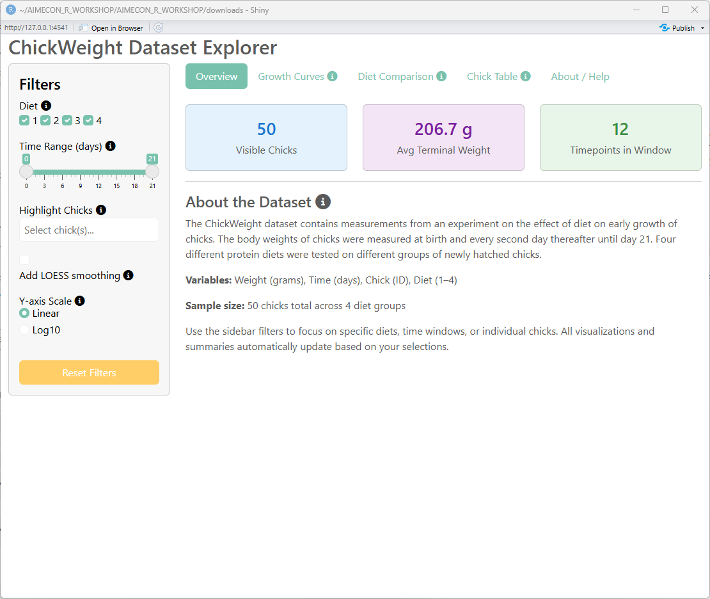
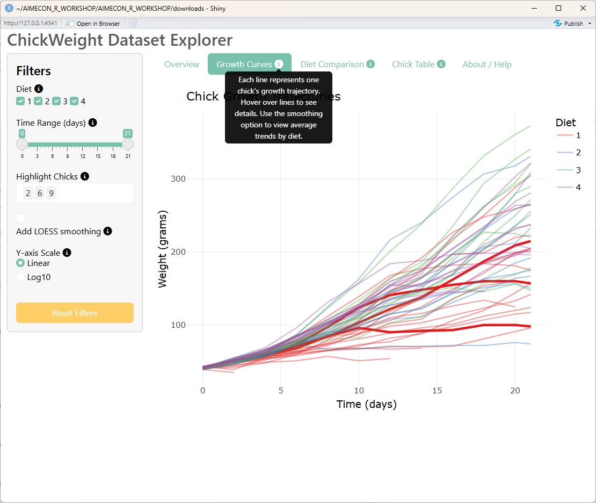
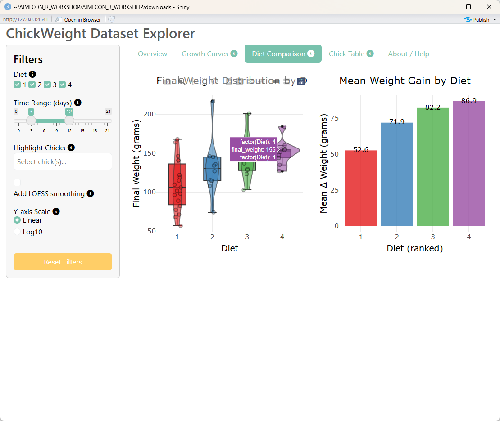
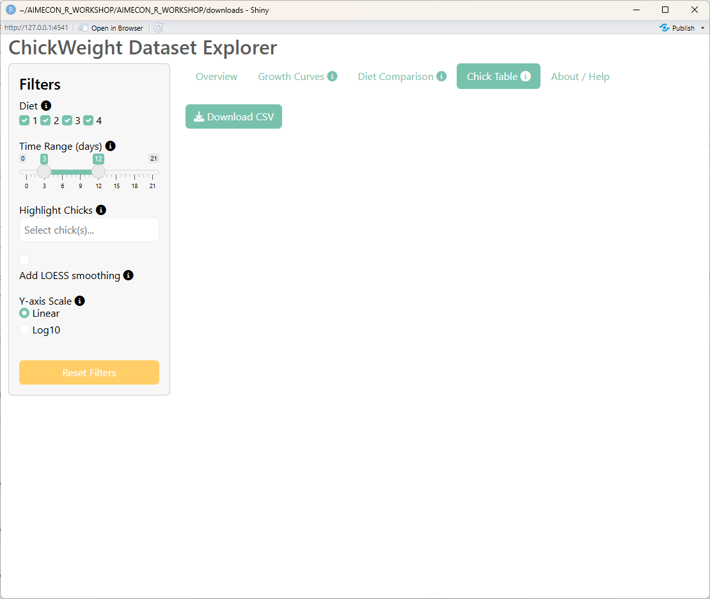
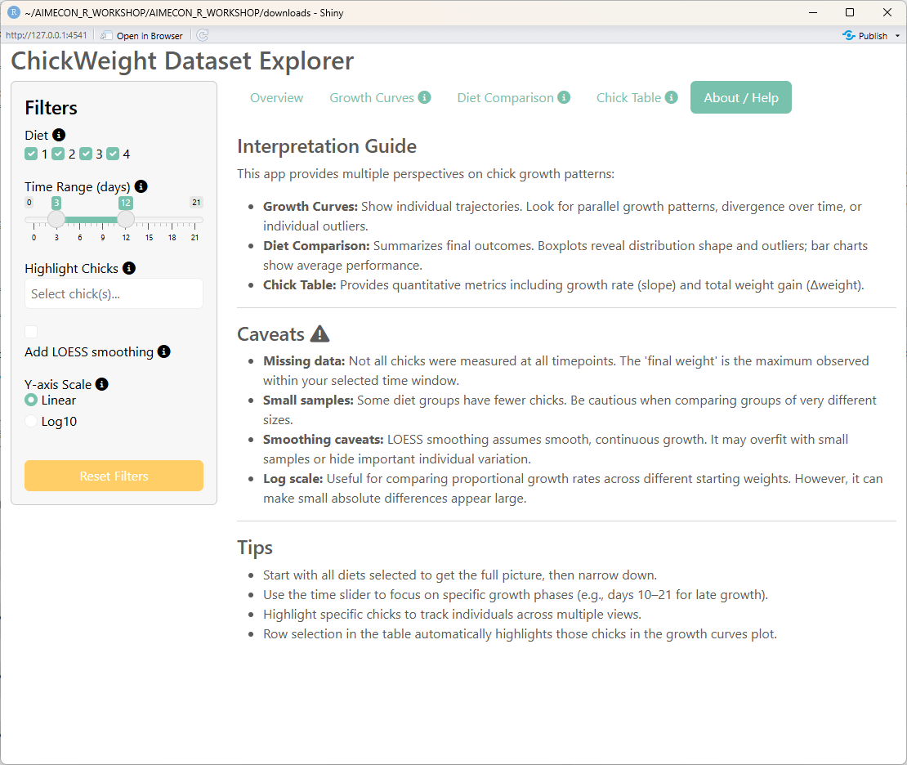
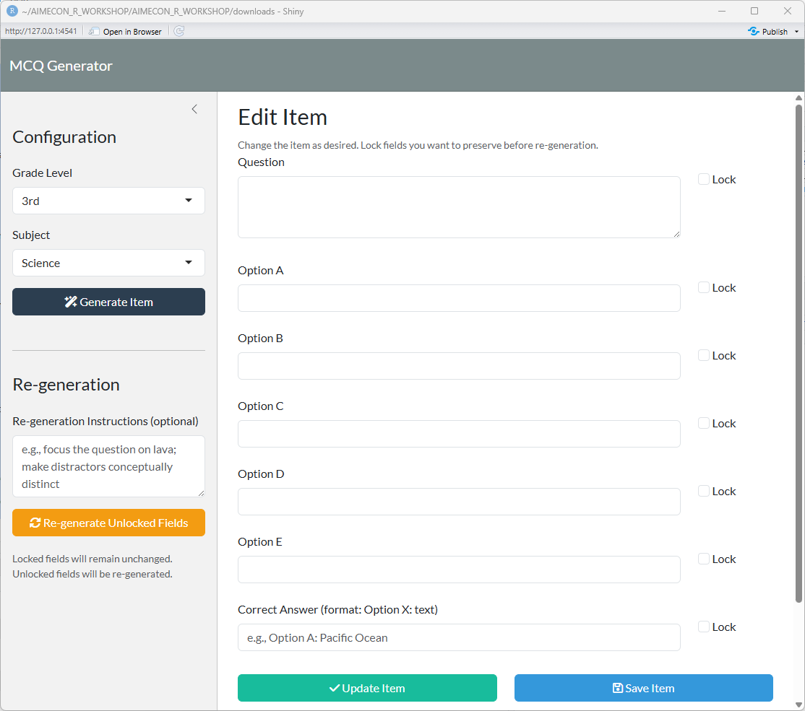
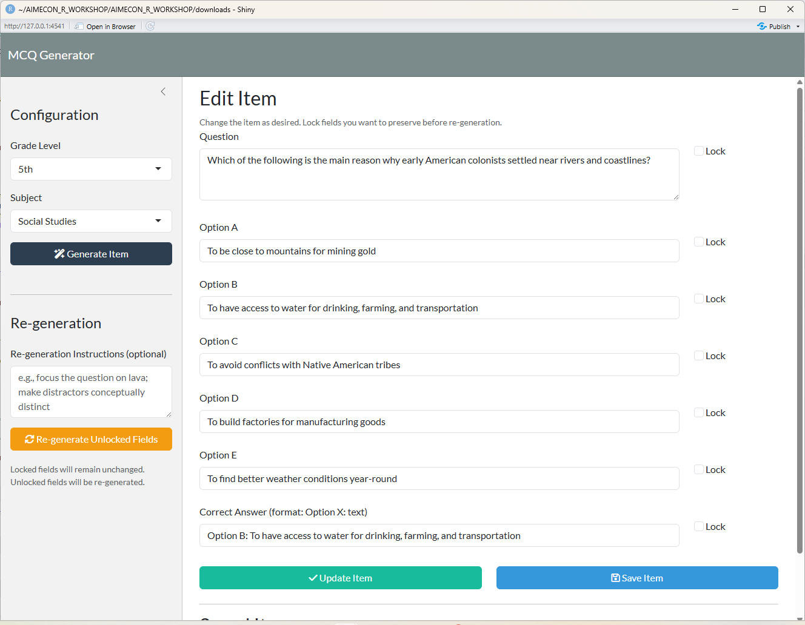
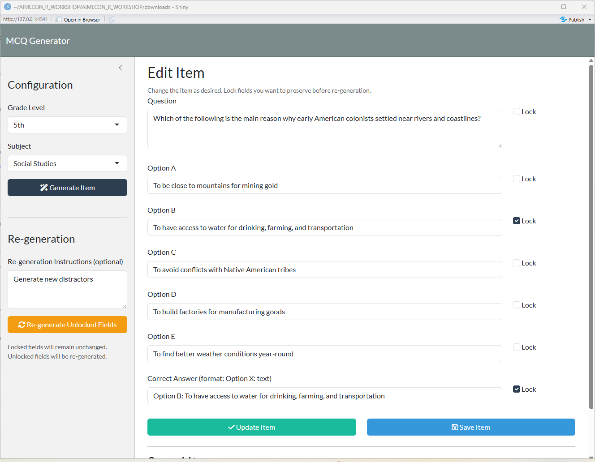
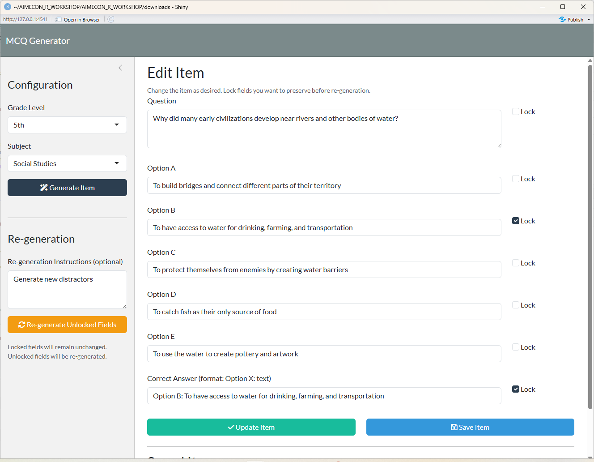
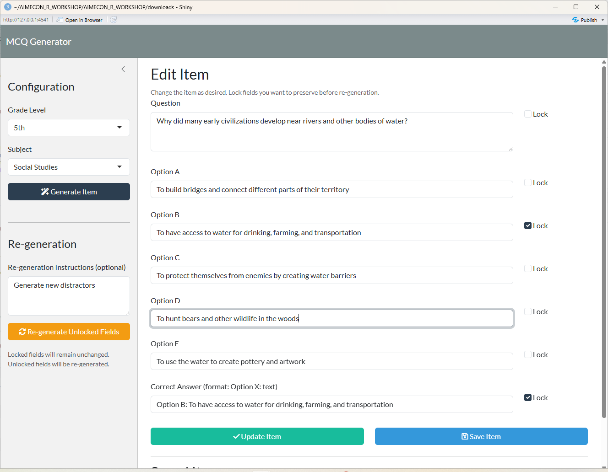

Now it’s time to make an app! When building an app via vibe coding, I’ve found that it’s best to ask the model to add features to the app in chunks. Providing a long list of “must-haves” to the model in a single prompt can overwhelm the model, and it can be difficult to make tweaks to small parts of the app.
For my process, I usually outline the basic functionality of what I want the app to do in the first prompt, knowing that there will be additional functionality that I want to build out later. I will sometimes write out a list of the functionality that I want to be integrated into the app. I then review the list and see if there is a logical structure to order that I want the components built - do any features depend on having other functionality in place. From there I then start the process of iterating with the model to develop the code that I want.
Note: Working with a model to vibe code can use a lot of tokens quickly. I have the lowest-tier plans with both Anthropic and ChatGPT, and the only time I’ve been told that I need to wait to submit another prompt is when I’ve been engaged in extensive vibe-coding sessions.
28.1 Data Visualization with Existing Data
Initial Prompt to Generate a Prompt
Help me generate a high-quality prompt that I can supply to an LLM to generate a Shiny app to evaluate the ChickWeight dataset. Have it include some interesting layout options, such as a sidebar or tabset. Also have some interesting pop-up displays of some sort - so when the user hovers over something (a graph, a selection box, etc) a pop-up is displayed that provides more context or provides instructions.
Prompt Generated by ChatGPT5
Prompt: Build a Shiny App to Explore the ChickWeight Dataset (no APIs)
Role: You are an expert R Shiny developer.
Task: Create a complete, runnable single-file Shiny app (app.R) that explores the base R datasets::ChickWeight dataset. The app must include: (1) a sidebar layout with global filters, (2) a tabset in the main area for multiple linked views, and (3) hover pop-ups / tooltips that provide instructions or context when users hover over inputs or UI elements. No external APIs or LLMs—everything is local to R.
Data Use datasets::ChickWeight as the only data source. Variables:
- weight (numeric), Time (days), Chick (ID), Diet (1–4).
Packages (keep dependencies modest) - Required: shiny, ggplot2, dplyr, tidyr, DT, bslib
- Optional (strongly preferred for interactivity): plotly for hover tooltips on charts
- Do not use packages that need system libraries; keep it CRAN-friendly.
UI & Layout Use bslib for a clean Bootstrap-5 theme (e.g., bslib::bs_theme(preset = "minty")).
Overall structure:shiny::fluidPage() → shiny::sidebarLayout()
- Sidebar panel (global filters): - Diet filter: checkboxGroupInput for Diet 1–4 (default: all) - Add a hover tooltip explaining diet codes (use bslib::tooltip() or bslib::popover() on the input label or an adjacent info icon). - Time range: sliderInput for days (0–21) - Add a tooltip: “Drag to focus growth interval; all summaries respect this window.” - Chick highlight: selectizeInput allowing multiple IDs to highlight (default: none) - Tooltip: “Type to find a Chick ID; selected IDs are emphasized in plots and table.” - Smoothing: checkboxInput to add LOESS mean curve per Diet (and optional CI ribbon) - Tooltip: “Show smoothed average by Diet; use with caution for small n.” - Scale: radioButtons for y-axis (“Linear”, “Log10”) - Tooltip: short rationale for log-scale. - Reset filters: actionButton("reset", "Reset Filters")
Main panel (tabset) Use tabsetPanel(id = "tabs", type = "pills") with the following tabs:
Overview
A valueBox-like summary row (simple cards) showing:
Number of visible chicks, average terminal weight (within time window), and number of timepoints.
A short paragraph (Markdown) describing the dataset and how filters apply.
A popover (hover info icon) that explains the study design and why repeated measures matter.
Growth Curves
Primary plot: weight vs. time lines, one line per Chick, colored by Diet.
Optional mean LOESS curve per Diet + semi-transparent ribbon (if smoothing is on).
If plotly is available, convert ggplot to ggplotly() so that hover shows:
Chick, Diet, Time, Weight, and (if computed) per-Chick slope for current window.
Add a small info icon near the tab title with a bslib::popover() explaining how to read growth curves.
Diet Comparison
Side-by-side boxplots/violins of final weight (within the chosen time window) by Diet.
A secondary bar chart ranking Diets by mean terminal weight (or mean Δweight per Chick).
Hover/tooltip on the plot area describing how “final weight” is derived (max Time within window).
Chick Table
A DT::datatable listing only the currently visible chicks (after filters), with columns:
Chick, Diet, n_timepoints (within window), first_weight, last_weight, Δweight, and slope (simple lm(weight ~ Time) over the window).
Row selection → highlights the corresponding Chick line in the Growth Curves tab (reactively).
Add a download button to export this table as CSV (no server storage).
Tooltip on the table header: “Click column headers to sort; use search to filter rows.”
About / Help
Concise prose on interpretation, caveats (missing values, small samples), and how smoothing/log scale change the view.
A bslib::popover() on “Caveats” that appears on hover for a few seconds.
Server Requirements (high-level behavior) - Create a single reactive filtered dataset based on Diet and Time range. All downstream outputs depend on this. - Linked reactivity: - Changing filters updates all tabs’ outputs. - Selecting/changing Chick IDs highlights them in plots and the table. - Selecting rows in the table highlights those lines in the Growth Curves plot. - Derived metrics (computed on the filtered data): - Per-Chick Δweight = (max weight − min weight) for times within the window. - Per-Chick slope from lm(weight ~ Time) within the window; display as g/day. - Per-Diet summaries (mean terminal weight, median Δweight). - Validation/empty states: - If filters remove all data, show a friendly empty-state message instead of blank plots/tables. - Scale handling: - If log scale is selected, transform y-axis appropriately and suppress non-positive weights (with a note). - Reset button restores default filters.
Hover Pop-ups / Tooltips (must-have) Use bslib::tooltip() and/or bslib::popover() to attach hover help to: - Diet filter label (explain diet codes 1–4) - Time range slider label (explain windows) - Chick select label (how highlighting works) - Growth Curves tab title or an adjacent info icon (how to interpret lines and smoothing) - Diet Comparison plot container (how “final weight” is determined) - Table header (sorting/search tips)
If plotly is used, ensure hovertext on the graph shows: Chick, Diet, Time, Weight, and Slope (if available).
Quality & Style - Clean, minimal design using bslib; sensible spacing and headings. - Clear code comments explaining each reactive object and output. - No external services or files; everything runs locally with shiny::runApp(). - Keep code in one file app.R.
Deliverable Output only a complete app.R in a single code block, ready to run.
Acceptance Criteria - App launches with sidebar + tabset and all tabs functioning. - Filters, highlights, and tabs are fully reactive and consistent. - Hover pop-ups/tooltips appear on specified inputs/areas using bslib. - Growth Curves and Diet Comparison are informative and respect filters/smoothing/scale. - Table reflects the filtered/visible cohort and supports row-selection highlighting. - CSV download works for the current table view.
App Syntax Generated by Claude
You can either download the app below, or copy and paste the chunk of code in a new .R file. Then highlight and execute the text. It may take a minute or two the first time the app runs for it to be built, but a new window should open and the app should run.
# ==============================================================================# Shiny App: ChickWeight Explorer# A single-file app exploring the datasets::ChickWeight dataset# ==============================================================================# Load required packageslibrary(shiny)library(ggplot2)library(dplyr)library(tidyr)library(DT)library(bslib)library(datasets)library(plotly)# For interactive hover tooltips# Load the datadata("ChickWeight", package ="datasets")# ==============================================================================# UI# ==============================================================================ui<-fluidPage( theme =bs_theme(preset ="minty", version =5),titlePanel("ChickWeight Dataset Explorer"),sidebarLayout(# --------------------------------------------------------------------------# SIDEBAR: Global Filters with Tooltips# --------------------------------------------------------------------------sidebarPanel( width =3,h4("Filters"),# Diet filter with tooltipdiv( style ="display: flex; align-items: center; gap: 5px;",tags$label("Diet", `for` ="diet_filter"),bslib::tooltip(icon("circle-info"),"Diet types 1–4 represent different protein supplements. Select which diets to include in the analysis.", placement ="right")),checkboxGroupInput("diet_filter", label =NULL, choices =1:4, selected =1:4, inline =TRUE),# Time range slider with tooltipdiv( style ="display: flex; align-items: center; gap: 5px; margin-top: 15px;",tags$label("Time Range (days)", `for` ="time_range"),bslib::tooltip(icon("circle-info"),"Drag to focus on a specific growth interval. All summaries and plots respect this time window.", placement ="right")),sliderInput("time_range", label =NULL, min =0, max =21, value =c(0, 21), step =1),# Chick highlight with tooltipdiv( style ="display: flex; align-items: center; gap: 5px; margin-top: 15px;",tags$label("Highlight Chicks", `for` ="chick_highlight"),bslib::tooltip(icon("circle-info"),"Type to find a Chick ID. Selected chicks are emphasized in plots and highlighted in the table.", placement ="right")),selectizeInput("chick_highlight", label =NULL, choices =unique(ChickWeight$Chick), selected =NULL, multiple =TRUE, options =list(placeholder ="Select chick(s)...")),# Smoothing option with tooltipdiv( style ="margin-top: 15px;",checkboxInput("smoothing", label =div("Add LOESS smoothing",bslib::tooltip(icon("circle-info"),"Show smoothed average trend by Diet with confidence ribbon. Use with caution for small sample sizes.", placement ="right")), value =FALSE)),# Scale option with tooltipdiv( style ="margin-top: 15px;",tags$label("Y-axis Scale"),bslib::tooltip(icon("circle-info"),"Log scale can reveal proportional growth patterns and reduce the influence of outliers.", placement ="right"),radioButtons("scale", label =NULL, choices =c("Linear", "Log10"), selected ="Linear")),# Reset buttonactionButton("reset","Reset Filters", class ="btn-warning", style ="margin-top: 20px; width: 100%;")),# --------------------------------------------------------------------------# MAIN PANEL: Tabset# --------------------------------------------------------------------------mainPanel( width =9,tabsetPanel( id ="tabs", type ="pills",# ---- Tab 1: Overview ----tabPanel("Overview",br(),fluidRow(column(4, uiOutput("summary_chicks")),column(4, uiOutput("summary_weight")),column(4, uiOutput("summary_timepoints"))),hr(),div(h4("About the Dataset",bslib::popover(icon("circle-info"), title ="Study Design","This is a repeated-measures experiment tracking chick growth over time under four different diet regimens. Each chick is measured at regular intervals (days 0, 2, 4, ..., 21).", placement ="right")),p("The ChickWeight dataset contains measurements from an experiment on the effect of diet on early growth of chicks. The body weights of chicks were measured at birth and every second day thereafter until day 21. Four different protein diets were tested on different groups of newly hatched chicks."),p(strong("Variables:"), "Weight (grams), Time (days), Chick (ID), Diet (1–4)"),p(strong("Sample size:"), "50 chicks total across 4 diet groups"),p("Use the sidebar filters to focus on specific diets, time windows, or individual chicks. All visualizations and summaries automatically update based on your selections."))),# ---- Tab 2: Growth Curves ----tabPanel(div("Growth Curves",bslib::tooltip(icon("circle-info"),"Each line represents one chick's growth trajectory. Hover over lines to see details. Use the smoothing option to view average trends by diet.", placement ="top")),br(),uiOutput("growth_empty_state"),plotlyOutput("growth_plot", height ="600px")),# ---- Tab 3: Diet Comparison ----tabPanel(div("Diet Comparison",bslib::tooltip(icon("circle-info"),"Final weight is defined as the maximum weight observed within the selected time window for each chick.", placement ="top")),br(),uiOutput("diet_empty_state"),fluidRow(column(6, plotlyOutput("diet_boxplot", height ="400px")),column(6, plotlyOutput("diet_barplot", height ="400px")))),# ---- Tab 4: Chick Table ----tabPanel(div("Chick Table",bslib::tooltip(icon("circle-info"),"Click column headers to sort. Use the search box to filter rows. Select rows to highlight chicks in the Growth Curves tab.", placement ="top")),br(),downloadButton("download_table", "Download CSV", class ="btn-primary"),br(), br(),DTOutput("chick_table")),# ---- Tab 5: About / Help ----tabPanel("About / Help",br(),h4("Interpretation Guide"),p("This app provides multiple perspectives on chick growth patterns:"),tags$ul(tags$li(strong("Growth Curves:"), "Show individual trajectories. Look for parallel growth patterns, divergence over time, or individual outliers."),tags$li(strong("Diet Comparison:"), "Summarizes final outcomes. Boxplots reveal distribution shape and outliers; bar charts show average performance."),tags$li(strong("Chick Table:"), "Provides quantitative metrics including growth rate (slope) and total weight gain (Δweight).")),hr(),h4("Caveats",bslib::popover(icon("triangle-exclamation"), title ="Important Considerations",HTML("<ul> <li>Some chicks have missing measurements at later timepoints</li> <li>Sample sizes vary by diet group</li> <li>LOESS smoothing can be misleading with small sample sizes</li> <li>Log scale is only appropriate for positive weights</li> </ul>"), placement ="right")),tags$ul(tags$li(strong("Missing data:"), "Not all chicks were measured at all timepoints. The 'final weight' is the maximum observed within your selected time window."),tags$li(strong("Small samples:"), "Some diet groups have fewer chicks. Be cautious when comparing groups of very different sizes."),tags$li(strong("Smoothing caveats:"), "LOESS smoothing assumes smooth, continuous growth. It may overfit with small samples or hide important individual variation."),tags$li(strong("Log scale:"), "Useful for comparing proportional growth rates across different starting weights. However, it can make small absolute differences appear large.")),hr(),h4("Tips"),tags$ul(tags$li("Start with all diets selected to get the full picture, then narrow down."),tags$li("Use the time slider to focus on specific growth phases (e.g., days 10–21 for late growth)."),tags$li("Highlight specific chicks to track individuals across multiple views."),tags$li("Row selection in the table automatically highlights those chicks in the growth curves plot.")))))))# ==============================================================================# SERVER# ==============================================================================server<-function(input, output, session){# ----------------------------------------------------------------------------# Reactive: Filtered Dataset# ----------------------------------------------------------------------------filtered_data<-reactive({req(input$diet_filter, input$time_range)ChickWeight%>%filter(Diet%in%input$diet_filter,Time>=input$time_range[1],Time<=input$time_range[2])})# ----------------------------------------------------------------------------# Reactive: Highlighted Chicks (from sidebar OR table selection)# ----------------------------------------------------------------------------highlighted_chicks<-reactive({# Combine sidebar selection and table row selectionsidebar_selected<-input$chick_highlighttable_selected<-if(!is.null(input$chick_table_rows_selected)){summary_table()[input$chick_table_rows_selected, ]$Chick}else{NULL}unique(c(sidebar_selected, as.character(table_selected)))})# ----------------------------------------------------------------------------# Reactive: Per-Chick Summary Metrics# ----------------------------------------------------------------------------summary_table<-reactive({req(nrow(filtered_data())>0)filtered_data()%>%group_by(Chick, Diet)%>%summarise( n_timepoints =n(), first_weight =min(weight, na.rm =TRUE), last_weight =max(weight, na.rm =TRUE), delta_weight =last_weight-first_weight, slope =if(n()>1){coef(lm(weight~Time))[2]}else{NA_real_}, .groups ="drop")%>%mutate( slope =round(slope, 2), delta_weight =round(delta_weight, 1), first_weight =round(first_weight, 1), last_weight =round(last_weight, 1))})# ----------------------------------------------------------------------------# Observer: Reset Filters# ----------------------------------------------------------------------------observeEvent(input$reset, {updateCheckboxGroupInput(session, "diet_filter", selected =1:4)updateSliderInput(session, "time_range", value =c(0, 21))updateSelectizeInput(session, "chick_highlight", selected =character(0))updateCheckboxInput(session, "smoothing", value =FALSE)updateRadioButtons(session, "scale", selected ="Linear")})# ----------------------------------------------------------------------------# TAB 1: Overview - Summary Cards# ----------------------------------------------------------------------------output$summary_chicks<-renderUI({n_chicks<-filtered_data()%>%pull(Chick)%>%unique()%>%length()div( class ="card text-center", style ="background-color: #e3f2fd; padding: 20px;",h3(n_chicks, style ="color: #1976d2; margin: 0;"),p("Visible Chicks", style ="margin: 5px 0 0 0;"))})output$summary_weight<-renderUI({avg_terminal<-filtered_data()%>%group_by(Chick)%>%summarise(terminal =max(weight, na.rm =TRUE))%>%pull(terminal)%>%mean(na.rm =TRUE)%>%round(1)div( class ="card text-center", style ="background-color: #f3e5f5; padding: 20px;",h3(paste0(avg_terminal, " g"), style ="color: #7b1fa2; margin: 0;"),p("Avg Terminal Weight", style ="margin: 5px 0 0 0;"))})output$summary_timepoints<-renderUI({n_points<-filtered_data()%>%pull(Time)%>%unique()%>%length()div( class ="card text-center", style ="background-color: #e8f5e9; padding: 20px;",h3(n_points, style ="color: #388e3c; margin: 0;"),p("Timepoints in Window", style ="margin: 5px 0 0 0;"))})# ----------------------------------------------------------------------------# TAB 2: Growth Curves Plot# ----------------------------------------------------------------------------output$growth_empty_state<-renderUI({if(nrow(filtered_data())==0){div( class ="alert alert-warning",icon("triangle-exclamation")," No data available with current filter settings. Try adjusting the filters.")}})output$growth_plot<-renderPlotly({req(nrow(filtered_data())>0)# Prepare data with highlightingplot_data<-filtered_data()%>%mutate( highlight =if(length(highlighted_chicks())>0){Chick%in%highlighted_chicks()}else{FALSE}, alpha_val =ifelse(highlight, 1, 0.4), size_val =ifelse(highlight, 1.2, 0.6))# Add slope to hover textslope_data<-summary_table()%>%select(Chick, slope)plot_data<-plot_data%>%left_join(slope_data, by ="Chick")%>%mutate( hover_text =paste0("Chick: ", Chick, "<br>","Diet: ", Diet, "<br>","Time: ", Time, " days<br>","Weight: ", round(weight, 1), " g<br>","Slope: ", ifelse(!is.na(slope), paste0(slope, " g/day"), "N/A")))# Base plotp<-ggplot(plot_data, aes(x =Time, y =weight, group =Chick, color =factor(Diet)))+geom_line(aes(alpha =alpha_val, size =size_val, text =hover_text))+scale_alpha_identity()+scale_size_identity()+scale_color_brewer(palette ="Set1", name ="Diet")+labs( title ="Chick Growth Trajectories", x ="Time (days)", y ="Weight (grams)")+theme_minimal(base_size =14)+theme(legend.position ="right")# Add LOESS smoothing if requestedif(input$smoothing){p<-p+geom_smooth(aes(group =Diet, color =factor(Diet)), method ="loess", se =TRUE, alpha =0.2, linewidth =1.5, inherit.aes =FALSE, data =filtered_data()%>%mutate(Diet =factor(Diet)))}# Apply scale transformationif(input$scale=="Log10"){# Filter out non-positive weights for log scaleplot_data_log<-plot_data%>%filter(weight>0)if(nrow(plot_data_log)<nrow(plot_data)){showNotification("Some weights ≤ 0 were excluded for log scale.", type ="warning")}p<-p+scale_y_log10()}# Convert to plotly for interactivityggplotly(p, tooltip ="text")%>%layout(hovermode ="closest")})# ----------------------------------------------------------------------------# TAB 3: Diet Comparison# ----------------------------------------------------------------------------output$diet_empty_state<-renderUI({if(nrow(filtered_data())==0){div( class ="alert alert-warning",icon("triangle-exclamation")," No data available with current filter settings. Try adjusting the filters.")}})output$diet_boxplot<-renderPlotly({req(nrow(filtered_data())>0)# Get final weight per chickfinal_weights<-filtered_data()%>%group_by(Chick, Diet)%>%summarise(final_weight =max(weight, na.rm =TRUE), .groups ="drop")p<-ggplot(final_weights, aes(x =factor(Diet), y =final_weight, fill =factor(Diet)))+geom_violin(alpha =0.6)+geom_boxplot(width =0.2, alpha =0.8, outlier.shape =NA)+geom_jitter(width =0.1, alpha =0.4, size =2)+scale_fill_brewer(palette ="Set1", name ="Diet")+labs( title ="Final Weight Distribution by Diet", x ="Diet", y ="Final Weight (grams)")+theme_minimal(base_size =14)+theme(legend.position ="none")ggplotly(p)%>%layout(hovermode ="closest")})output$diet_barplot<-renderPlotly({req(nrow(filtered_data())>0)# Mean delta weight by dietdiet_summary<-summary_table()%>%group_by(Diet)%>%summarise( mean_delta =mean(delta_weight, na.rm =TRUE), .groups ="drop")%>%arrange(desc(mean_delta))p<-ggplot(diet_summary, aes(x =reorder(factor(Diet), mean_delta), y =mean_delta, fill =factor(Diet)))+geom_col(alpha =0.8)+geom_text(aes(label =round(mean_delta, 1)), vjust =-0.5, size =4)+scale_fill_brewer(palette ="Set1", name ="Diet")+labs( title ="Mean Weight Gain by Diet", x ="Diet (ranked)", y ="Mean Δ Weight (grams)")+theme_minimal(base_size =14)+theme(legend.position ="none")ggplotly(p)%>%layout(hovermode ="closest")})# ----------------------------------------------------------------------------# TAB 4: Chick Table# ----------------------------------------------------------------------------output$chick_table<-renderDT({req(nrow(summary_table())>0)datatable(summary_table(), options =list( pageLength =15, searching =TRUE, ordering =TRUE, dom ='frtip'), selection ="multiple", rownames =FALSE, colnames =c("Chick", "Diet", "N Timepoints", "First Weight (g)","Last Weight (g)", "Δ Weight (g)", "Slope (g/day)"))%>%formatStyle("Chick", target ="row", backgroundColor =styleEqual(highlighted_chicks(),rep("lightyellow", length(highlighted_chicks()))))})# Download handler for tableoutput$download_table<-downloadHandler( filename =function(){paste0("chick_summary_", Sys.Date(), ".csv")}, content =function(file){write.csv(summary_table(), file, row.names =FALSE)})}# ==============================================================================# Run the App# ==============================================================================shinyApp(ui =ui, server =server)
28.1.1 Screenshots of ChickWeight App
First tab: Overview

Second tab: Growth Curves

Third tab: Diet Comparison Plots

Fourth tab: CSV Download

Fifth tab: About/Help Page

28.2 Integrating LLM Calls in an App
Now let’s pull together a few of the things you learned today and build an app that integrates calling an LLM! This purpose of this simple app is to help educators / test developers generate items given certain parameters - student grade level and school subject.
When developing a prompt for vibe coding, I often ask a model to help me improve my first prompt.
Initial Prompt that I wrote:
Prompt:
I want to make an R Shiny app to facilitate making multiple-choice questions for a variety of grade levels for a variety of subjects.
On the left is a drop-down menu is has two selectable options: grade level (1st, 3rd, 5th, 7th) and topic (geography, science, social studies). This will serve to an input for a function that will call a generative AI model to generate a multiple-choice item based on the selected topic that is appropriate for the selected grade level. The generative AI model will return a question [question], 5 answer options [option A : option E], and the repeat the correct answer option [correct answer : ]. Here is an example:
[Question : What is the main source of energy for the water cycle?]
In the second column: Those responses will each populate in a different text box column that corresponds to the LLM output (question, option A, option B, option C, option D, option E, correct answer) with instructions to the user to “change the item as desired”. The user can then makes changes if they would like, and then re-submit the item. Alternatively, if the user does not want to make changes or is happy with the submitted changes, the user can select “submit item” which will then save the item to a certain location on the computer.
I want the user to ask the app to re-generate parts of an MCQ question. So the user can “save” or “lock” aspects of the LLM response (such as the item stem or some of the responses). I also want the user to be able to provide instructions to the LLM when asking for the item to be re-generated. So if the item is on volcanos and the LLM make an item about their location, the user can say “focus the question on lava” and the LLM will take this information and re-generate the item.
There should be two user input option buttons after finishing the task. “Update item” where the submitted information becomes the pre-populated item info, or “Save Item” when the information is satisfactory and should be saved.
Once the user selects “Save Item” when the item is finished, I would like this information saved to a list in R. So whatever is in the “Question” text box is written to a list entry called question, whatever is in the “Option A” text box is written to a list called optionA, and so on.
Write that syntax.
The prompt to the LLM to improve the prompt
Here’s a prompt to ask an LLM to build an app that I’d like to include as an example for my workshop. Your task is to review the prompt and make improvements to it’s organization, language, and structure so it’s more appropriate to serve as an LLM prompt. Please ask clarifying questions after reviewing the prompt if it will help you in your refinement. The prompt:
Final LLM-assisted Prompt
You are an expert R Shiny developer.
Build a complete, runnable single-file R Shiny app (app.R) that helps users generate, edit, and save multiple-choice questions (MCQs) by grade level and subject.
🎯 Goals
Let users select a Grade Level and Subject.
Call a generative AI helper function to produce a question and five answer options (A–E), plus the correct answer.
Display the generated text in editable text boxes so users can make changes.
Provide two buttons:
“Update item” – commits edited text to the current item.
“Save item” – appends the finalized item to a persistent list stored in the app’s working directory.
Store all items (including Grade and Subject metadata) in an .rds file named saved_items.rds.
Question: What is the main source of energy for the water cycle?
Option A: The Moon
Option B: The Sun
Option C: The Wind
Option D: The Earth's Core
Option E: Ocean Currents
Correct Answer: Option B: The Sun
Helper Function
Implement generate_item_via_ai() with a live model call to an Anthropic model.
Update Item
When “Update Item” is clicked, read all text inputs and overwrite the current_item values.
Validate that all fields are filled and that exactly five options (A–E) exist.
Save Item
Validate fields again before saving.
Append current_item to a reactive list saved_items() (using reactiveVal).
Include metadata fields: Grade, Subject, and Timestamp.
Save the entire list as an .rds file (saveRDS(saved_items(), "saved_items.rds")) in the working directory.
On app startup, if “saved_items.rds” exists, load it with readRDS().
Feedback
Use showNotification() for user feedback (e.g., “Item saved successfully!” or “Missing correct answer.”).
Display a summary table of all saved items.
🧩 Implementation Details
Use base shiny and bslib (optional for theming).
Keep code in one self-contained file (app.R).
Comment each section clearly to support learning (especially reactivity).
Enforce exactly five options (A–E) at all times.
Save items to the working directory only—no external path handling.
Maintain minimal accessibility (no additional ARIA labeling for this demo).
✅ Deliverable
Output only a fully runnable app.R file in one code block.
The app should work immediately when run with shiny::runApp().
28.2.1 Working App with LLM Integration
You can either download the app below, or copy and paste the chunk of code in a new .R file. Then highlight and execute the text. It may take a minute or two the first time the app runs for it to be built, but a new window should open and the app should run. In the background the app is using the ANTHROPIC_API_KEY that was provided to you as part of the workshop. You’ll have to get your own Anthropic API Key to continue running the app outside of the workshop hours.
Given the prompt above, here is what Claude produced:
Code
# MCQ Generator Shiny App# Single-file app with field locking and AI-powered regenerationlibrary(shiny)library(bslib)library(httr2)# ==============================================================================# AI HELPER FUNCTIONS# ==============================================================================#' Generate a complete MCQ item via AI#'#' @param grade Grade level (e.g., "1st", "3rd", "5th", "7th")#' @param subject Subject (e.g., "Geography", "Science", "Social Studies")#' @return Named list with: question, optionA, optionB, optionC, optionD, optionE, correctAnswergenerate_item_via_ai<-function(grade, subject){api_key<-Sys.getenv("ANTHROPIC_API_KEY")if(api_key==""){stop("ANTHROPIC_API_KEY not found in .Renviron")}system_prompt<-"You are an expert assessment item writer. Produce age-appropriate MCQs with exactly five options (A-E) and a single correct answer. Follow the output format strictly."user_prompt<-sprintf("Context: Grade = %s, Subject = %s\n\nGenerate a multiple-choice question suitable for this grade level and subject.\n\nOutput Format (required):\nQuestion: <text>\nOption A: <text>\nOption B: <text>\nOption C: <text>\nOption D: <text>\nOption E: <text>\nCorrect Answer: Option <A|B|C|D|E>: <repeat the correct option text verbatim>\n\nEnsure the correct answer key and text match one of A-E. Keep language at the specified grade level.",grade, subject)response<-request("https://api.anthropic.com/v1/messages")|>req_headers("x-api-key"=api_key,"anthropic-version"="2023-06-01","content-type"="application/json")|>req_body_json(list( model ="claude-sonnet-4-20250514", max_tokens =1024, system =system_prompt, messages =list(list(role ="user", content =user_prompt))))|>req_perform()|>resp_body_json()content_text<-response$content[[1]]$textreturn(parse_ai_output(content_text))}#' Re-generate an MCQ item via AI with locked fields#'#' @param grade Grade level#' @param subject Subject#' @param instructions Free-text instructions for regeneration#' @param locked_values Named list of locked fields (subset of: question, optionA-E, correctAnswer)#' @return Named list with all 7 fields (locked fields unchanged)regenerate_item_via_ai<-function(grade, subject, instructions, locked_values){api_key<-Sys.getenv("ANTHROPIC_API_KEY")if(api_key==""){stop("ANTHROPIC_API_KEY not found in .Renviron")}system_prompt<-"You are an expert assessment item writer. Produce age-appropriate MCQs with exactly five options (A-E) and a single correct answer. Follow the output format strictly."locked_fields_text<-""if(length(locked_values)>0){locked_fields_text<-"\n\nLocked fields (echo these unchanged):\n"for(field_nameinnames(locked_values)){locked_fields_text<-paste0(locked_fields_text, field_name, ": ", locked_values[[field_name]], "\n")}}instructions_text<-""if(!is.null(instructions)&&nchar(trimws(instructions))>0){instructions_text<-paste0("\n\nInstructions: ", instructions)}user_prompt<-sprintf("Context: Grade = %s, Subject = %s%s%s\n\nRe-generate a multiple-choice question. Echo all locked fields unchanged. Generate new content for unlocked fields that is consistent with locked fields, grade, subject, and instructions.\n\nOutput Format (required):\nQuestion: <text>\nOption A: <text>\nOption B: <text>\nOption C: <text>\nOption D: <text>\nOption E: <text>\nCorrect Answer: Option <A|B|C|D|E>: <repeat the correct option text verbatim>\n\nReturn all fields. Ensure the correct answer key and text match one of A-E. Keep language at the specified grade level.",grade, subject, locked_fields_text, instructions_text)response<-request("https://api.anthropic.com/v1/messages")|>req_headers("x-api-key"=api_key,"anthropic-version"="2023-06-01","content-type"="application/json")|>req_body_json(list( model ="claude-sonnet-4-20250514", max_tokens =1024, system =system_prompt, messages =list(list(role ="user", content =user_prompt))))|>req_perform()|>resp_body_json()content_text<-response$content[[1]]$textparsed<-parse_ai_output(content_text)# Validate locked fieldsfor(field_nameinnames(locked_values)){if(!identical(parsed[[field_name]], locked_values[[field_name]])){warning(paste("AI violated lock on field:", field_name))parsed[[field_name]]<-locked_values[[field_name]]}}return(parsed)}#' Parse AI output text into structured formatparse_ai_output<-function(text){lines<-strsplit(text, "\n")[[1]]lines<-trimws(lines)lines<-lines[nchar(lines)>0]result<-list()for(lineinlines){if(grepl("^Question:", line, ignore.case =TRUE)){result$question<-trimws(sub("^Question:", "", line, ignore.case =TRUE))}elseif(grepl("^Option A:", line, ignore.case =TRUE)){result$optionA<-trimws(sub("^Option A:", "", line, ignore.case =TRUE))}elseif(grepl("^Option B:", line, ignore.case =TRUE)){result$optionB<-trimws(sub("^Option B:", "", line, ignore.case =TRUE))}elseif(grepl("^Option C:", line, ignore.case =TRUE)){result$optionC<-trimws(sub("^Option C:", "", line, ignore.case =TRUE))}elseif(grepl("^Option D:", line, ignore.case =TRUE)){result$optionD<-trimws(sub("^Option D:", "", line, ignore.case =TRUE))}elseif(grepl("^Option E:", line, ignore.case =TRUE)){result$optionE<-trimws(sub("^Option E:", "", line, ignore.case =TRUE))}elseif(grepl("^Correct Answer:", line, ignore.case =TRUE)){result$correctAnswer<-trimws(sub("^Correct Answer:", "", line, ignore.case =TRUE))}}return(result)}# ==============================================================================# VALIDATION FUNCTIONS# ==============================================================================validate_item<-function(item){errors<-c()# Check questionif(is.null(item$question)||nchar(trimws(item$question))==0){errors<-c(errors, "Question cannot be empty")}# Check all optionsrequired_options<-c("optionA", "optionB", "optionC", "optionD", "optionE")for(optinrequired_options){if(is.null(item[[opt]])||nchar(trimws(item[[opt]]))==0){errors<-c(errors, paste("Option", substr(opt, 7, 7), "cannot be empty"))}}# Check correct answer formatif(is.null(item$correctAnswer)||nchar(trimws(item$correctAnswer))==0){errors<-c(errors, "Correct Answer cannot be empty")}else{# Extract key (A-E)correct_key<-extract_correct_key(item$correctAnswer)if(is.na(correct_key)){errors<-c(errors, "Correct Answer must start with 'Option A:', 'Option B:', etc.")}else{# Verify the text matches the optionoption_field<-paste0("option", correct_key)expected_text<-item[[option_field]]actual_text<-extract_correct_text(item$correctAnswer)if(!identical(trimws(expected_text), trimws(actual_text))){errors<-c(errors, paste0("Correct Answer text must match Option ", correct_key, " exactly"))}}}if(length(errors)>0){return(list(valid =FALSE, errors =errors))}else{return(list(valid =TRUE, errors =NULL))}}extract_correct_key<-function(correct_answer){match<-regexpr("Option ([A-E]):", correct_answer, ignore.case =TRUE)if(match>0){key_text<-regmatches(correct_answer, match)key<-sub("Option ([A-E]):.*", "\\1", key_text, ignore.case =TRUE)return(toupper(key))}return(NA)}extract_correct_text<-function(correct_answer){text<-sub("^Option [A-E]:\\s*", "", correct_answer, ignore.case =TRUE)return(trimws(text))}# ==============================================================================# UI# ==============================================================================ui<-page_sidebar( title ="MCQ Generator", theme =bs_theme(version =5, bootswatch ="flatly"), sidebar =sidebar( width =300,h4("Configuration"),selectInput("grade","Grade Level", choices =c("1st", "3rd", "5th", "7th"), selected ="3rd"),selectInput("subject","Subject", choices =c("Geography", "Science", "Social Studies"), selected ="Science"),actionButton("generate","Generate Item", icon =icon("wand-magic-sparkles"), class ="btn-primary w-100 mb-3"),hr(),h4("Re-generation"),textAreaInput("regen_instructions","Re-generation Instructions (optional)", placeholder ="e.g., focus the question on lava; make distractors conceptually distinct", rows =3),actionButton("regen_unlocked","Re-generate Unlocked Fields", icon =icon("rotate"), class ="btn-warning w-100"),helpText("Locked fields will remain unchanged. Unlocked fields will be re-generated.")),# Main contentdiv( class ="container-fluid",h3("Edit Item"),helpText("Change the item as desired. Lock fields you want to preserve before re-generation."),# Questiondiv( class ="row mb-3",div( class ="col-md-10",textAreaInput("question","Question", value ="", rows =3, width ="100%")),div( class ="col-md-2",br(),checkboxInput("lock_question", "Lock", FALSE))),# Options A-Elapply(LETTERS[1:5], function(letter){div( class ="row mb-2",div( class ="col-md-10",textInput(paste0("option", letter),paste("Option", letter), value ="", width ="100%")),div( class ="col-md-2",br(),checkboxInput(paste0("lock_option", letter), "Lock", FALSE)))}),# Correct Answerdiv( class ="row mb-3",div( class ="col-md-10",textInput("correctAnswer","Correct Answer (format: Option X: text)", value ="", width ="100%", placeholder ="e.g., Option A: Pacific Ocean")),div( class ="col-md-2",br(),checkboxInput("lock_correctAnswer", "Lock", FALSE))),# Action buttonsdiv( class ="row mb-4",div( class ="col-md-6",actionButton("update_item","Update Item", icon =icon("check"), class ="btn-success w-100")),div( class ="col-md-6",actionButton("save_item","Save Item", icon =icon("save"), class ="btn-info w-100"))),hr(),# Feedback areah3("Saved Items"),uiOutput("feedback_message"),tableOutput("saved_items_table")))# ==============================================================================# SERVER# ==============================================================================server<-function(input, output, session){# Reactive values for current itemcurrent_item<-reactiveValues( grade =NULL, subject =NULL, question ="", optionA ="", optionB ="", optionC ="", optionD ="", optionE ="", correctAnswer ="", timestamp =NULL)# Saved items listsaved_items<-reactiveVal(list())# Load saved items on startupobserve({if(file.exists("saved_items.rds")){tryCatch({loaded<-readRDS("saved_items.rds")saved_items(loaded)showNotification(paste("Loaded", length(loaded), "saved items"), type ="message")}, error =function(e){showNotification(paste("Error loading saved items:", e$message), type ="error")})}})# Generate ItemobserveEvent(input$generate, {tryCatch({showNotification("Generating item...", type ="message", duration =2)item<-generate_item_via_ai(input$grade, input$subject)# Update UI fieldsupdateTextAreaInput(session, "question", value =item$question)updateTextInput(session, "optionA", value =item$optionA)updateTextInput(session, "optionB", value =item$optionB)updateTextInput(session, "optionC", value =item$optionC)updateTextInput(session, "optionD", value =item$optionD)updateTextInput(session, "optionE", value =item$optionE)updateTextInput(session, "correctAnswer", value =item$correctAnswer)# Update current_itemcurrent_item$grade<-input$gradecurrent_item$subject<-input$subjectcurrent_item$question<-item$questioncurrent_item$optionA<-item$optionAcurrent_item$optionB<-item$optionBcurrent_item$optionC<-item$optionCcurrent_item$optionD<-item$optionDcurrent_item$optionE<-item$optionEcurrent_item$correctAnswer<-item$correctAnswercurrent_item$timestamp<-Sys.time()showNotification("Item generated successfully!", type ="message")}, error =function(e){showNotification(paste("Error generating item:", e$message), type ="error", duration =5)})})# Re-generate Unlocked FieldsobserveEvent(input$regen_unlocked, {tryCatch({showNotification("Re-generating unlocked fields...", type ="message", duration =2)# Build locked_values from checkbox stateslocked_values<-list()if(input$lock_question){locked_values$question<-input$question}if(input$lock_optionA){locked_values$optionA<-input$optionA}if(input$lock_optionB){locked_values$optionB<-input$optionB}if(input$lock_optionC){locked_values$optionC<-input$optionC}if(input$lock_optionD){locked_values$optionD<-input$optionD}if(input$lock_optionE){locked_values$optionE<-input$optionE}if(input$lock_correctAnswer){locked_values$correctAnswer<-input$correctAnswer}# Call regenerationitem<-regenerate_item_via_ai(input$grade,input$subject,input$regen_instructions,locked_values)# Validate that locked fields were respectedviolated_locks<-c()for(fieldinnames(locked_values)){if(!identical(trimws(item[[field]]), trimws(locked_values[[field]]))){violated_locks<-c(violated_locks, field)# Restore locked valueitem[[field]]<-locked_values[[field]]}}if(length(violated_locks)>0){showNotification(paste("Warning: AI violated locks on:", paste(violated_locks, collapse =", "), ". Values restored."), type ="warning", duration =5)}# Update UI fieldsupdateTextAreaInput(session, "question", value =item$question)updateTextInput(session, "optionA", value =item$optionA)updateTextInput(session, "optionB", value =item$optionB)updateTextInput(session, "optionC", value =item$optionC)updateTextInput(session, "optionD", value =item$optionD)updateTextInput(session, "optionE", value =item$optionE)updateTextInput(session, "correctAnswer", value =item$correctAnswer)# Update current_itemcurrent_item$grade<-input$gradecurrent_item$subject<-input$subjectcurrent_item$question<-item$questioncurrent_item$optionA<-item$optionAcurrent_item$optionB<-item$optionBcurrent_item$optionC<-item$optionCcurrent_item$optionD<-item$optionDcurrent_item$optionE<-item$optionEcurrent_item$correctAnswer<-item$correctAnswercurrent_item$timestamp<-Sys.time()showNotification("Item re-generated successfully!", type ="message")}, error =function(e){showNotification(paste("Error re-generating item:", e$message), type ="error", duration =5)})})# Update ItemobserveEvent(input$update_item, {item<-list( question =input$question, optionA =input$optionA, optionB =input$optionB, optionC =input$optionC, optionD =input$optionD, optionE =input$optionE, correctAnswer =input$correctAnswer)validation<-validate_item(item)if(!validation$valid){showNotification(paste("Validation errors:", paste(validation$errors, collapse ="; ")), type ="error", duration =5)}else{current_item$grade<-input$gradecurrent_item$subject<-input$subjectcurrent_item$question<-item$questioncurrent_item$optionA<-item$optionAcurrent_item$optionB<-item$optionBcurrent_item$optionC<-item$optionCcurrent_item$optionD<-item$optionDcurrent_item$optionE<-item$optionEcurrent_item$correctAnswer<-item$correctAnswercurrent_item$timestamp<-Sys.time()showNotification("Item updated successfully!", type ="message")}})# Save ItemobserveEvent(input$save_item, {item<-list( grade =input$grade, subject =input$subject, question =input$question, optionA =input$optionA, optionB =input$optionB, optionC =input$optionC, optionD =input$optionD, optionE =input$optionE, correctAnswer =input$correctAnswer)validation<-validate_item(item)if(!validation$valid){showNotification(paste("Cannot save. Validation errors:", paste(validation$errors, collapse ="; ")), type ="error", duration =5)}else{# Add timestampitem$timestamp<-Sys.time()# Append to saved itemscurrent_saved<-saved_items()current_saved[[length(current_saved)+1]]<-itemsaved_items(current_saved)# Save to filetryCatch({saveRDS(current_saved, "saved_items.rds")showNotification(paste("Item saved successfully! Total items:", length(current_saved)), type ="message", duration =3)}, error =function(e){showNotification(paste("Error saving to file:", e$message), type ="error", duration =5)})}})# Render saved items tableoutput$saved_items_table<-renderTable({items<-saved_items()if(length(items)==0){return(data.frame( Message ="No items saved yet"))}# Create summary tablesummary_df<-do.call(rbind, lapply(seq_along(items), function(i){item<-items[[i]]data.frame( Index =i, Grade =item$grade, Subject =item$subject, Question =substr(item$question, 1, 60), Timestamp =as.character(item$timestamp), stringsAsFactors =FALSE)}))summary_df}, striped =TRUE, hover =TRUE, bordered =TRUE)# Feedback messageoutput$feedback_message<-renderUI({items<-saved_items()if(length(items)>0){div( class ="alert alert-info",icon("circle-info"),paste("Total saved items:", length(items)))}})}# ==============================================================================# RUN APP# ==============================================================================shinyApp(ui =ui, server =server)
28.2.2 Screenshots of the App with LLM Integration
Initial App State

After LLM Item Generation

Partial Item Re-generation

Re-generated Item

Direct Item Editing

28.3 Build your own app!
Now it’s time for you to build a Shiny app!
Source Code
# Activity: Shiny App Development {#sec-act-shiny}Now it's time to make an app! When building an app via vibe coding, I've found that it's best to ask the model to add features to the app in chunks.Providing a long list of "must-haves" to the model in a single prompt can overwhelm the model, and it can be difficult to make tweaks to small parts of the app.For my process, I usually outline the basic functionality of what I want the app to do in the first prompt, knowing that there will be additional functionality that I want to build out later. I will sometimes write out a list of the functionality that I want to be integrated into the app.I then review the list and see if there is a logical structure to order that I want the components built - do any features depend on having other functionality in place.From there I then start the process of iterating with the model to develop the code that I want.**Note: Working with a model to vibe code can use a lot of tokens quickly.** I have the lowest-tier plans with both Anthropic and ChatGPT, and the only time I've been told that I need to wait to submit another prompt is when I've been engaged in extensive vibe-coding sessions.## Data Visualization with Existing Data::: {.callout-note collapse="true"}## Initial Prompt to Generate a PromptHelp me generate a high-quality prompt that I can supply to an LLM to generate a Shiny app to evaluate the ChickWeight dataset. Have it include some interesting layout options, such as a sidebar or tabset. Also have some interesting pop-up displays of some sort - so when the user hovers over something (a graph, a selection box, etc) a pop-up is displayed that provides more context or provides instructions.:::::: {.callout-note collapse="true"}## Prompt Generated by ChatGPT5Prompt: Build a Shiny App to Explore the `ChickWeight` Dataset (no APIs)**Role:** You are an expert R Shiny developer.**Task:** Create a complete, runnable **single-file Shiny app (`app.R`)** that explores the base R **`datasets::ChickWeight`** dataset. The app must include: (1) a **sidebar layout** with global filters, (2) a **tabset** in the main area for multiple linked views, and (3) **hover pop-ups / tooltips** that provide instructions or context when users hover over inputs or UI elements. **No external APIs or LLMs**—everything is local to R.---**Data**Use `datasets::ChickWeight` as the only data source. Variables: - `weight` (numeric), `Time` (days), `Chick` (ID), `Diet` (1–4).---**Packages (keep dependencies modest)**- Required: **shiny**, **ggplot2**, **dplyr**, **tidyr**, **DT**, **bslib** - Optional (strongly preferred for interactivity): **plotly** for hover tooltips on charts - Do **not** use packages that need system libraries; keep it CRAN-friendly.---**UI & Layout**Use **`bslib`** for a clean Bootstrap-5 theme (e.g., `bslib::bs_theme(preset = "minty")`).**Overall structure:** `shiny::fluidPage()` → `shiny::sidebarLayout()`- **Sidebar panel (global filters):** - **Diet filter**: `checkboxGroupInput` for Diet 1–4 (default: all) - Add a **hover tooltip** explaining diet codes (use `bslib::tooltip()` or `bslib::popover()` on the input label or an adjacent info icon). - **Time range**: `sliderInput` for days (0–21) - Add a tooltip: “Drag to focus growth interval; all summaries respect this window.” - **Chick highlight**: `selectizeInput` allowing multiple IDs to highlight (default: none) - Tooltip: “Type to find a Chick ID; selected IDs are emphasized in plots and table.” - **Smoothing**: `checkboxInput` to add LOESS mean curve per Diet (and optional CI ribbon) - Tooltip: “Show smoothed average by Diet; use with caution for small n.” - **Scale**: `radioButtons` for y-axis (“Linear”, “Log10”) - Tooltip: short rationale for log-scale. - **Reset filters**: `actionButton("reset", "Reset Filters")`- **Main panel (tabset)** Use `tabsetPanel(id = "tabs", type = "pills")` with the following tabs: 1) **Overview** - A **valueBox-like summary row** (simple cards) showing: - Number of visible chicks, average terminal weight (within time window), and number of timepoints. - A short paragraph (Markdown) describing the dataset and how filters apply. - A **popover** (hover info icon) that explains the study design and why repeated measures matter. 2) **Growth Curves** - **Primary plot**: weight vs. time lines, one line per Chick, colored by Diet. - Optional **mean LOESS curve per Diet** + semi-transparent ribbon (if smoothing is on). - **Highlight** selected Chick IDs (thicker line/alpha=1). - If `plotly` is available, convert `ggplot` to `ggplotly()` so that **hover** shows: - Chick, Diet, Time, Weight, and (if computed) per-Chick slope for current window. - Add a small **info icon** near the tab title with a `bslib::popover()` explaining how to read growth curves. 3) **Diet Comparison** - Side-by-side **boxplots/violins** of final weight (within the chosen time window) by Diet. - A secondary **bar chart** ranking Diets by mean terminal weight (or mean Δweight per Chick). - Hover/tooltip on the plot area describing how “final weight” is derived (max Time within window). 4) **Chick Table** - A `DT::datatable` listing only the currently **visible** chicks (after filters), with columns: - Chick, Diet, n_timepoints (within window), first_weight, last_weight, **Δweight**, and **slope** (simple lm(weight ~ Time) over the window). - **Row selection → highlights** the corresponding Chick line in the Growth Curves tab (reactively). - Add a **download button** to export this table as CSV (no server storage). - Tooltip on the table header: “Click column headers to sort; use search to filter rows.” 5) **About / Help** - Concise prose on interpretation, caveats (missing values, small samples), and how smoothing/log scale change the view. - A `bslib::popover()` on “Caveats” that appears on hover for a few seconds.---**Server Requirements (high-level behavior)**- Create a single reactive **filtered dataset** based on Diet and Time range. All downstream outputs depend on this.- **Linked reactivity**: - Changing filters updates all tabs’ outputs. - Selecting/changing Chick IDs highlights them in plots and the table. - Selecting rows in the table highlights those lines in the Growth Curves plot.- **Derived metrics** (computed on the filtered data): - Per-Chick **Δweight** = (max weight − min weight) for times within the window. - Per-Chick **slope** from `lm(weight ~ Time)` within the window; display as g/day. - Per-Diet summaries (mean terminal weight, median Δweight).- **Validation/empty states**: - If filters remove all data, show a friendly empty-state message instead of blank plots/tables.- **Scale handling**: - If log scale is selected, transform y-axis appropriately and suppress non-positive weights (with a note).- **Reset** button restores default filters.---**Hover Pop-ups / Tooltips (must-have)**Use **`bslib::tooltip()`** and/or **`bslib::popover()`** to attach hover help to:- Diet filter label (explain diet codes 1–4)- Time range slider label (explain windows)- Chick select label (how highlighting works)- Growth Curves tab title or an adjacent info icon (how to interpret lines and smoothing)- Diet Comparison plot container (how “final weight” is determined)- Table header (sorting/search tips)If `plotly` is used, ensure **hovertext** on the graph shows: Chick, Diet, Time, Weight, and Slope (if available).---**Quality & Style**- Clean, minimal design using **bslib**; sensible spacing and headings.- Clear code comments explaining each reactive object and output.- No external services or files; everything runs locally with `shiny::runApp()`.- Keep code in **one file `app.R`**.---**Deliverable**Output **only** a complete `app.R` in a single code block, ready to run.**Acceptance Criteria**- App launches with sidebar + tabset and all tabs functioning.- Filters, highlights, and tabs are fully reactive and consistent.- Hover pop-ups/tooltips appear on specified inputs/areas using `bslib`.- Growth Curves and Diet Comparison are informative and respect filters/smoothing/scale.- Table reflects the filtered/visible cohort and supports row-selection highlighting.- CSV download works for the current table view.:::::: {.callout-note collapse="true"}## App Syntax Generated by ClaudeYou can either download the app below, or copy and paste the chunk of code in a new .R file.Then highlight and execute the text.It may take a minute or two the first time the app runs for it to be built, but a new window should open and the app should run.<a href="downloads/ChickWeight_app.R" download style="display: inline-block; padding: 10px 20px; background-color: #4A90E2; color: black; text-decoration: none; border-radius: 5px;"> 📥 Download `ChickWeight_app`</a>```{r, eval = FALSE}# ==============================================================================# Shiny App: ChickWeight Explorer# A single-file app exploring the datasets::ChickWeight dataset# ==============================================================================# Load required packageslibrary(shiny)library(ggplot2)library(dplyr)library(tidyr)library(DT)library(bslib)library(datasets)library(plotly) # For interactive hover tooltips# Load the datadata("ChickWeight", package ="datasets")# ==============================================================================# UI# ==============================================================================ui <-fluidPage(theme =bs_theme(preset ="minty", version =5),titlePanel("ChickWeight Dataset Explorer"),sidebarLayout(# --------------------------------------------------------------------------# SIDEBAR: Global Filters with Tooltips# --------------------------------------------------------------------------sidebarPanel(width =3,h4("Filters"),# Diet filter with tooltipdiv(style ="display: flex; align-items: center; gap: 5px;", tags$label("Diet", `for`="diet_filter"), bslib::tooltip(icon("circle-info"),"Diet types 1–4 represent different protein supplements. Select which diets to include in the analysis.",placement ="right" ) ),checkboxGroupInput("diet_filter",label =NULL,choices =1:4,selected =1:4,inline =TRUE ),# Time range slider with tooltipdiv(style ="display: flex; align-items: center; gap: 5px; margin-top: 15px;", tags$label("Time Range (days)", `for`="time_range"), bslib::tooltip(icon("circle-info"),"Drag to focus on a specific growth interval. All summaries and plots respect this time window.",placement ="right" ) ),sliderInput("time_range",label =NULL,min =0,max =21,value =c(0, 21),step =1 ),# Chick highlight with tooltipdiv(style ="display: flex; align-items: center; gap: 5px; margin-top: 15px;", tags$label("Highlight Chicks", `for`="chick_highlight"), bslib::tooltip(icon("circle-info"),"Type to find a Chick ID. Selected chicks are emphasized in plots and highlighted in the table.",placement ="right" ) ),selectizeInput("chick_highlight",label =NULL,choices =unique(ChickWeight$Chick),selected =NULL,multiple =TRUE,options =list(placeholder ="Select chick(s)...") ),# Smoothing option with tooltipdiv(style ="margin-top: 15px;",checkboxInput("smoothing",label =div("Add LOESS smoothing", bslib::tooltip(icon("circle-info"),"Show smoothed average trend by Diet with confidence ribbon. Use with caution for small sample sizes.",placement ="right" ) ),value =FALSE ) ),# Scale option with tooltipdiv(style ="margin-top: 15px;", tags$label("Y-axis Scale"), bslib::tooltip(icon("circle-info"),"Log scale can reveal proportional growth patterns and reduce the influence of outliers.",placement ="right" ),radioButtons("scale",label =NULL,choices =c("Linear", "Log10"),selected ="Linear" ) ),# Reset buttonactionButton("reset","Reset Filters",class ="btn-warning",style ="margin-top: 20px; width: 100%;" ) ),# --------------------------------------------------------------------------# MAIN PANEL: Tabset# --------------------------------------------------------------------------mainPanel(width =9,tabsetPanel(id ="tabs",type ="pills",# ---- Tab 1: Overview ----tabPanel("Overview",br(),fluidRow(column(4, uiOutput("summary_chicks")),column(4, uiOutput("summary_weight")),column(4, uiOutput("summary_timepoints")) ),hr(),div(h4("About the Dataset", bslib::popover(icon("circle-info"),title ="Study Design","This is a repeated-measures experiment tracking chick growth over time under four different diet regimens. Each chick is measured at regular intervals (days 0, 2, 4, ..., 21).",placement ="right" ) ),p("The ChickWeight dataset contains measurements from an experiment on the effect of diet on early growth of chicks. The body weights of chicks were measured at birth and every second day thereafter until day 21. Four different protein diets were tested on different groups of newly hatched chicks."),p(strong("Variables:"), "Weight (grams), Time (days), Chick (ID), Diet (1–4)"),p(strong("Sample size:"), "50 chicks total across 4 diet groups"),p("Use the sidebar filters to focus on specific diets, time windows, or individual chicks. All visualizations and summaries automatically update based on your selections.") ) ),# ---- Tab 2: Growth Curves ----tabPanel(div("Growth Curves", bslib::tooltip(icon("circle-info"),"Each line represents one chick's growth trajectory. Hover over lines to see details. Use the smoothing option to view average trends by diet.",placement ="top" ) ),br(),uiOutput("growth_empty_state"),plotlyOutput("growth_plot", height ="600px") ),# ---- Tab 3: Diet Comparison ----tabPanel(div("Diet Comparison", bslib::tooltip(icon("circle-info"),"Final weight is defined as the maximum weight observed within the selected time window for each chick.",placement ="top" ) ),br(),uiOutput("diet_empty_state"),fluidRow(column(6, plotlyOutput("diet_boxplot", height ="400px")),column(6, plotlyOutput("diet_barplot", height ="400px")) ) ),# ---- Tab 4: Chick Table ----tabPanel(div("Chick Table", bslib::tooltip(icon("circle-info"),"Click column headers to sort. Use the search box to filter rows. Select rows to highlight chicks in the Growth Curves tab.",placement ="top" ) ),br(),downloadButton("download_table", "Download CSV", class ="btn-primary"),br(), br(),DTOutput("chick_table") ),# ---- Tab 5: About / Help ----tabPanel("About / Help",br(),h4("Interpretation Guide"),p("This app provides multiple perspectives on chick growth patterns:"), tags$ul( tags$li(strong("Growth Curves:"), "Show individual trajectories. Look for parallel growth patterns, divergence over time, or individual outliers."), tags$li(strong("Diet Comparison:"), "Summarizes final outcomes. Boxplots reveal distribution shape and outliers; bar charts show average performance."), tags$li(strong("Chick Table:"), "Provides quantitative metrics including growth rate (slope) and total weight gain (Δweight).") ),hr(),h4("Caveats", bslib::popover(icon("triangle-exclamation"),title ="Important Considerations",HTML("<ul> <li>Some chicks have missing measurements at later timepoints</li> <li>Sample sizes vary by diet group</li> <li>LOESS smoothing can be misleading with small sample sizes</li> <li>Log scale is only appropriate for positive weights</li> </ul>"),placement ="right" ) ), tags$ul( tags$li(strong("Missing data:"), "Not all chicks were measured at all timepoints. The 'final weight' is the maximum observed within your selected time window."), tags$li(strong("Small samples:"), "Some diet groups have fewer chicks. Be cautious when comparing groups of very different sizes."), tags$li(strong("Smoothing caveats:"), "LOESS smoothing assumes smooth, continuous growth. It may overfit with small samples or hide important individual variation."), tags$li(strong("Log scale:"), "Useful for comparing proportional growth rates across different starting weights. However, it can make small absolute differences appear large.") ),hr(),h4("Tips"), tags$ul( tags$li("Start with all diets selected to get the full picture, then narrow down."), tags$li("Use the time slider to focus on specific growth phases (e.g., days 10–21 for late growth)."), tags$li("Highlight specific chicks to track individuals across multiple views."), tags$li("Row selection in the table automatically highlights those chicks in the growth curves plot.") ) ) ) ) ))# ==============================================================================# SERVER# ==============================================================================server <-function(input, output, session) {# ----------------------------------------------------------------------------# Reactive: Filtered Dataset# ---------------------------------------------------------------------------- filtered_data <-reactive({req(input$diet_filter, input$time_range) ChickWeight %>%filter( Diet %in% input$diet_filter, Time >= input$time_range[1], Time <= input$time_range[2] ) })# ----------------------------------------------------------------------------# Reactive: Highlighted Chicks (from sidebar OR table selection)# ---------------------------------------------------------------------------- highlighted_chicks <-reactive({# Combine sidebar selection and table row selection sidebar_selected <- input$chick_highlight table_selected <-if (!is.null(input$chick_table_rows_selected)) {summary_table()[input$chick_table_rows_selected, ]$Chick } else {NULL }unique(c(sidebar_selected, as.character(table_selected))) })# ----------------------------------------------------------------------------# Reactive: Per-Chick Summary Metrics# ---------------------------------------------------------------------------- summary_table <-reactive({req(nrow(filtered_data()) >0)filtered_data() %>%group_by(Chick, Diet) %>%summarise(n_timepoints =n(),first_weight =min(weight, na.rm =TRUE),last_weight =max(weight, na.rm =TRUE),delta_weight = last_weight - first_weight,slope =if (n() >1) {coef(lm(weight ~ Time))[2] } else {NA_real_ },.groups ="drop" ) %>%mutate(slope =round(slope, 2),delta_weight =round(delta_weight, 1),first_weight =round(first_weight, 1),last_weight =round(last_weight, 1) ) })# ----------------------------------------------------------------------------# Observer: Reset Filters# ----------------------------------------------------------------------------observeEvent(input$reset, {updateCheckboxGroupInput(session, "diet_filter", selected =1:4)updateSliderInput(session, "time_range", value =c(0, 21))updateSelectizeInput(session, "chick_highlight", selected =character(0))updateCheckboxInput(session, "smoothing", value =FALSE)updateRadioButtons(session, "scale", selected ="Linear") })# ----------------------------------------------------------------------------# TAB 1: Overview - Summary Cards# ---------------------------------------------------------------------------- output$summary_chicks <-renderUI({ n_chicks <-filtered_data() %>%pull(Chick) %>%unique() %>%length()div(class ="card text-center",style ="background-color: #e3f2fd; padding: 20px;",h3(n_chicks, style ="color: #1976d2; margin: 0;"),p("Visible Chicks", style ="margin: 5px 0 0 0;") ) }) output$summary_weight <-renderUI({ avg_terminal <-filtered_data() %>%group_by(Chick) %>%summarise(terminal =max(weight, na.rm =TRUE)) %>%pull(terminal) %>%mean(na.rm =TRUE) %>%round(1)div(class ="card text-center",style ="background-color: #f3e5f5; padding: 20px;",h3(paste0(avg_terminal, " g"), style ="color: #7b1fa2; margin: 0;"),p("Avg Terminal Weight", style ="margin: 5px 0 0 0;") ) }) output$summary_timepoints <-renderUI({ n_points <-filtered_data() %>%pull(Time) %>%unique() %>%length()div(class ="card text-center",style ="background-color: #e8f5e9; padding: 20px;",h3(n_points, style ="color: #388e3c; margin: 0;"),p("Timepoints in Window", style ="margin: 5px 0 0 0;") ) })# ----------------------------------------------------------------------------# TAB 2: Growth Curves Plot# ---------------------------------------------------------------------------- output$growth_empty_state <-renderUI({if (nrow(filtered_data()) ==0) {div(class ="alert alert-warning",icon("triangle-exclamation")," No data available with current filter settings. Try adjusting the filters." ) } }) output$growth_plot <-renderPlotly({req(nrow(filtered_data()) >0)# Prepare data with highlighting plot_data <-filtered_data() %>%mutate(highlight =if (length(highlighted_chicks()) >0) { Chick %in%highlighted_chicks() } else {FALSE },alpha_val =ifelse(highlight, 1, 0.4),size_val =ifelse(highlight, 1.2, 0.6) )# Add slope to hover text slope_data <-summary_table() %>%select(Chick, slope) plot_data <- plot_data %>%left_join(slope_data, by ="Chick") %>%mutate(hover_text =paste0("Chick: ", Chick, "<br>","Diet: ", Diet, "<br>","Time: ", Time, " days<br>","Weight: ", round(weight, 1), " g<br>","Slope: ", ifelse(!is.na(slope), paste0(slope, " g/day"), "N/A") ) )# Base plot p <-ggplot(plot_data, aes(x = Time, y = weight, group = Chick, color =factor(Diet))) +geom_line(aes(alpha = alpha_val, size = size_val, text = hover_text)) +scale_alpha_identity() +scale_size_identity() +scale_color_brewer(palette ="Set1", name ="Diet") +labs(title ="Chick Growth Trajectories",x ="Time (days)",y ="Weight (grams)" ) +theme_minimal(base_size =14) +theme(legend.position ="right")# Add LOESS smoothing if requestedif (input$smoothing) { p <- p +geom_smooth(aes(group = Diet, color =factor(Diet)),method ="loess",se =TRUE,alpha =0.2,linewidth =1.5,inherit.aes =FALSE,data =filtered_data() %>%mutate(Diet =factor(Diet)) ) }# Apply scale transformationif (input$scale =="Log10") {# Filter out non-positive weights for log scale plot_data_log <- plot_data %>%filter(weight >0)if (nrow(plot_data_log) <nrow(plot_data)) {showNotification("Some weights ≤ 0 were excluded for log scale.", type ="warning") } p <- p +scale_y_log10() }# Convert to plotly for interactivityggplotly(p, tooltip ="text") %>%layout(hovermode ="closest") })# ----------------------------------------------------------------------------# TAB 3: Diet Comparison# ---------------------------------------------------------------------------- output$diet_empty_state <-renderUI({if (nrow(filtered_data()) ==0) {div(class ="alert alert-warning",icon("triangle-exclamation")," No data available with current filter settings. Try adjusting the filters." ) } }) output$diet_boxplot <-renderPlotly({req(nrow(filtered_data()) >0)# Get final weight per chick final_weights <-filtered_data() %>%group_by(Chick, Diet) %>%summarise(final_weight =max(weight, na.rm =TRUE), .groups ="drop") p <-ggplot(final_weights, aes(x =factor(Diet), y = final_weight, fill =factor(Diet))) +geom_violin(alpha =0.6) +geom_boxplot(width =0.2, alpha =0.8, outlier.shape =NA) +geom_jitter(width =0.1, alpha =0.4, size =2) +scale_fill_brewer(palette ="Set1", name ="Diet") +labs(title ="Final Weight Distribution by Diet",x ="Diet",y ="Final Weight (grams)" ) +theme_minimal(base_size =14) +theme(legend.position ="none")ggplotly(p) %>%layout(hovermode ="closest") }) output$diet_barplot <-renderPlotly({req(nrow(filtered_data()) >0)# Mean delta weight by diet diet_summary <-summary_table() %>%group_by(Diet) %>%summarise(mean_delta =mean(delta_weight, na.rm =TRUE),.groups ="drop" ) %>%arrange(desc(mean_delta)) p <-ggplot(diet_summary, aes(x =reorder(factor(Diet), mean_delta), y = mean_delta, fill =factor(Diet))) +geom_col(alpha =0.8) +geom_text(aes(label =round(mean_delta, 1)), vjust =-0.5, size =4) +scale_fill_brewer(palette ="Set1", name ="Diet") +labs(title ="Mean Weight Gain by Diet",x ="Diet (ranked)",y ="Mean Δ Weight (grams)" ) +theme_minimal(base_size =14) +theme(legend.position ="none")ggplotly(p) %>%layout(hovermode ="closest") })# ----------------------------------------------------------------------------# TAB 4: Chick Table# ---------------------------------------------------------------------------- output$chick_table <-renderDT({req(nrow(summary_table()) >0)datatable(summary_table(),options =list(pageLength =15,searching =TRUE,ordering =TRUE,dom ='frtip' ),selection ="multiple",rownames =FALSE,colnames =c("Chick", "Diet", "N Timepoints", "First Weight (g)","Last Weight (g)", "Δ Weight (g)", "Slope (g/day)" ) ) %>%formatStyle("Chick",target ="row",backgroundColor =styleEqual(highlighted_chicks(),rep("lightyellow", length(highlighted_chicks())) ) ) })# Download handler for table output$download_table <-downloadHandler(filename =function() {paste0("chick_summary_", Sys.Date(), ".csv") },content =function(file) {write.csv(summary_table(), file, row.names =FALSE) } )}# ==============================================================================# Run the App# ==============================================================================shinyApp(ui = ui, server = server)```:::### Screenshots of ChickWeight App::: {.callout-note collapse="true"}## First tab: Overview{fig-align="center"}:::::: {.callout-note collapse="true"}## Second tab: Growth Curves{fig-align="center"}:::::: {.callout-note collapse="true"}## Third tab: Diet Comparison Plots{fig-align="center"}:::::: {.callout-note collapse="true"}## Fourth tab: CSV Download{fig-align="center"}:::::: {.callout-note collapse="true"}## Fifth tab: About/Help Page{fig-align="center"}:::## Integrating LLM Calls in an AppNow let's pull together a few of the things you learned today and build an app that integrates calling an LLM! This purpose of this simple app is to help educators / test developers generate items given certain parameters - student grade level and school subject.When developing a prompt for vibe coding, I often ask a model to help me improve my first prompt.::: {.callout-note collapse="true"}## Initial Prompt that I wrote:Prompt:I want to make an R Shiny app to facilitate making multiple-choice questions for a variety of grade levels for a variety of subjects. On the left is a drop-down menu is has two selectable options: grade level (1st, 3rd, 5th, 7th) and topic (geography, science, social studies). This will serve to an input for a function that will call a generative AI model to generate a multiple-choice item based on the selected topic that is appropriate for the selected grade level. The generative AI model will return a question [question], 5 answer options [option A : option E], and the repeat the correct answer option [correct answer : ]. Here is an example:[Question : What is the main source of energy for the water cycle?]\n[Option A : The Moon]\n[Option B : The Sun]\n[Option C : The Wind]\n[Option D : The Earth's Core]\n[Option E : Ocean Currents]\n[Correct Answer : Option B : The Sun]In the second column: Those responses will each populate in a different text box column that corresponds to the LLM output (question, option A, option B, option C, option D, option E, correct answer) with instructions to the user to "change the item as desired". The user can then makes changes if they would like, and then re-submit the item. Alternatively, if the user does not want to make changes or is happy with the submitted changes, the user can select "submit item" which will then save the item to a certain location on the computer.I want the user to ask the app to re-generate parts of an MCQ question. So the user can "save" or "lock" aspects of the LLM response (such as the item stem or some of the responses). I also want the user to be able to provide instructions to the LLM when asking for the item to be re-generated. So if the item is on volcanos and the LLM make an item about their location, the user can say "focus the question on lava" and the LLM will take this information and re-generate the item.There should be two user input option buttons after finishing the task. "Update item" where the submitted information becomes the pre-populated item info, or "Save Item" when the information is satisfactory and should be saved.Once the user selects "Save Item" when the item is finished, I would like this information saved to a list in R. So whatever is in the "Question" text box is written to a list entry called question, whatever is in the "Option A" text box is written to a list called optionA, and so on.Write that syntax.:::::: {.callout-note collapse="true"}## The prompt to the LLM to improve the promptHere's a prompt to ask an LLM to build an app that I'd like to include as an example for my workshop. Your task is to review the prompt and make improvements to it's organization, language, and structure so it's more appropriate to serve as an LLM prompt. Please ask clarifying questions after reviewing the prompt if it will help you in your refinement. The prompt::::::: {.callout-note collapse="true"}## Final LLM-assisted PromptYou are an expert R Shiny developer.Build a complete, runnable single-file R Shiny app (app.R) that helps users generate, edit, and save multiple-choice questions (MCQs) by grade level and subject.**🎯 Goals**- Let users select a Grade Level and Subject.- Call a generative AI helper function to produce a question and five answer options (A–E), plus the correct answer.- Display the generated text in editable text boxes so users can make changes.- Provide two buttons: - "Update item" – commits edited text to the current item. - "Save item" – appends the finalized item to a persistent list stored in the app's working directory.- Store all items (including Grade and Subject metadata) in an .rds file named saved_items.rds.**⚙️ App Specifications****UI****Left sidebar:**- `selectInput("grade", "Grade Level", choices = c("1st", "3rd", "5th", "7th"))`- `selectInput("subject", "Subject", choices = c("Geography", "Science", "Social Studies"))`- `actionButton("generate", "Generate Item")`**Main panel:**Editable text boxes for:- Question- Option A- Option B- Option C- Option D- Option E- Correct Answer(Each labeled clearly with a hint: "Change the item as desired.")**Action buttons:**- `actionButton("update_item", "Update Item")`- `actionButton("save_item", "Save Item")`**Display area showing:**- A message or notification confirming updates/saves- A summary table (`renderTable`) listing saved items (Grade, Subject, Question stem, Timestamp)**Server Logic**Maintain a `reactiveValues()` object named `current_item` containing:- grade, subject, question, optionA, optionB, optionC, optionD, optionE, correctAnswer, and timestamp.**Generate Item**- Use `observeEvent(input$generate, ...)` to call a helper function `generate_item_via_ai(grade, subject)`.- The helper function returns a named list of 7 fields based on the AI output format below.- Populate each text input area with the returned values.**AI Output Format**The model should return text formatted exactly as:```Question: <text>Option A: <text>Option B: <text>Option C: <text>Option D: <text>Option E: <text>Correct Answer: Option <A|B|C|D|E>: <repeat the correct option text verbatim>```**Example:**```Question: What is the main source of energy for the water cycle?Option A: The MoonOption B: The SunOption C: The WindOption D: The Earth's CoreOption E: Ocean CurrentsCorrect Answer: Option B: The Sun```**Helper Function**Implement `generate_item_via_ai()` with a live model call to an Anthropic model.**Update Item**- When "Update Item" is clicked, read all text inputs and overwrite the `current_item` values.- Validate that all fields are filled and that exactly five options (A–E) exist.**Save Item**- Validate fields again before saving.- Append `current_item` to a reactive list `saved_items()` (using `reactiveVal`).- Include metadata fields: Grade, Subject, and Timestamp.- Save the entire list as an .rds file (`saveRDS(saved_items(), "saved_items.rds")`) in the working directory.- On app startup, if "saved_items.rds" exists, load it with `readRDS()`.**Feedback**- Use `showNotification()` for user feedback (e.g., "Item saved successfully!" or "Missing correct answer.").- Display a summary table of all saved items.**🧩 Implementation Details**- Use base shiny and bslib (optional for theming).- Keep code in one self-contained file (app.R).- Comment each section clearly to support learning (especially reactivity).- Enforce exactly five options (A–E) at all times.- Save items to the working directory only—no external path handling.- Maintain minimal accessibility (no additional ARIA labeling for this demo).**✅ Deliverable**Output only a fully runnable app.R file in one code block.The app should work immediately when run with `shiny::runApp()`.:::### Working App with LLM IntegrationYou can either download the app below, or copy and paste the chunk of code in a new .R file.Then highlight and execute the text.It may take a minute or two the first time the app runs for it to be built, but a new window should open and the app should run.In the background the app is using the ANTHROPIC_API_KEY that was provided to you as part of the workshop. You'll have to [get your own Anthropic API Key](@sec-api-keys) to continue running the app outside of the workshop hours.<a href="downloads/mcq_maker_app.R" download style="display: inline-block; padding: 10px 20px; background-color: #4A90E2; color: black; text-decoration: none; border-radius: 5px;"> 📥 Download `mcq_maker_app`</a>::: {.callout-note collapse="true"}## View the App Code Generated by ClaudeGiven the prompt above, here is what Claude produced:```{r, eval = FALSE}# MCQ Generator Shiny App# Single-file app with field locking and AI-powered regenerationlibrary(shiny)library(bslib)library(httr2)# ==============================================================================# AI HELPER FUNCTIONS# ==============================================================================#' Generate a complete MCQ item via AI#'#' @param grade Grade level (e.g., "1st", "3rd", "5th", "7th")#' @param subject Subject (e.g., "Geography", "Science", "Social Studies")#' @return Named list with: question, optionA, optionB, optionC, optionD, optionE, correctAnswergenerate_item_via_ai <-function(grade, subject) { api_key <-Sys.getenv("ANTHROPIC_API_KEY")if (api_key =="") {stop("ANTHROPIC_API_KEY not found in .Renviron") } system_prompt <-"You are an expert assessment item writer. Produce age-appropriate MCQs with exactly five options (A-E) and a single correct answer. Follow the output format strictly." user_prompt <-sprintf("Context: Grade = %s, Subject = %s\n\nGenerate a multiple-choice question suitable for this grade level and subject.\n\nOutput Format (required):\nQuestion: <text>\nOption A: <text>\nOption B: <text>\nOption C: <text>\nOption D: <text>\nOption E: <text>\nCorrect Answer: Option <A|B|C|D|E>: <repeat the correct option text verbatim>\n\nEnsure the correct answer key and text match one of A-E. Keep language at the specified grade level.", grade, subject ) response <-request("https://api.anthropic.com/v1/messages") |>req_headers("x-api-key"= api_key,"anthropic-version"="2023-06-01","content-type"="application/json" ) |>req_body_json(list(model ="claude-sonnet-4-20250514",max_tokens =1024,system = system_prompt,messages =list(list(role ="user", content = user_prompt) ) )) |>req_perform() |>resp_body_json() content_text <- response$content[[1]]$textreturn(parse_ai_output(content_text))}#' Re-generate an MCQ item via AI with locked fields#'#' @param grade Grade level#' @param subject Subject#' @param instructions Free-text instructions for regeneration#' @param locked_values Named list of locked fields (subset of: question, optionA-E, correctAnswer)#' @return Named list with all 7 fields (locked fields unchanged)regenerate_item_via_ai <-function(grade, subject, instructions, locked_values) { api_key <-Sys.getenv("ANTHROPIC_API_KEY")if (api_key =="") {stop("ANTHROPIC_API_KEY not found in .Renviron") } system_prompt <-"You are an expert assessment item writer. Produce age-appropriate MCQs with exactly five options (A-E) and a single correct answer. Follow the output format strictly." locked_fields_text <-""if (length(locked_values) >0) { locked_fields_text <-"\n\nLocked fields (echo these unchanged):\n"for (field_name innames(locked_values)) { locked_fields_text <-paste0(locked_fields_text, field_name, ": ", locked_values[[field_name]], "\n") } } instructions_text <-""if (!is.null(instructions) &&nchar(trimws(instructions)) >0) { instructions_text <-paste0("\n\nInstructions: ", instructions) } user_prompt <-sprintf("Context: Grade = %s, Subject = %s%s%s\n\nRe-generate a multiple-choice question. Echo all locked fields unchanged. Generate new content for unlocked fields that is consistent with locked fields, grade, subject, and instructions.\n\nOutput Format (required):\nQuestion: <text>\nOption A: <text>\nOption B: <text>\nOption C: <text>\nOption D: <text>\nOption E: <text>\nCorrect Answer: Option <A|B|C|D|E>: <repeat the correct option text verbatim>\n\nReturn all fields. Ensure the correct answer key and text match one of A-E. Keep language at the specified grade level.", grade, subject, locked_fields_text, instructions_text ) response <-request("https://api.anthropic.com/v1/messages") |>req_headers("x-api-key"= api_key,"anthropic-version"="2023-06-01","content-type"="application/json" ) |>req_body_json(list(model ="claude-sonnet-4-20250514",max_tokens =1024,system = system_prompt,messages =list(list(role ="user", content = user_prompt) ) )) |>req_perform() |>resp_body_json() content_text <- response$content[[1]]$text parsed <-parse_ai_output(content_text)# Validate locked fieldsfor (field_name innames(locked_values)) {if (!identical(parsed[[field_name]], locked_values[[field_name]])) {warning(paste("AI violated lock on field:", field_name)) parsed[[field_name]] <- locked_values[[field_name]] } }return(parsed)}#' Parse AI output text into structured formatparse_ai_output <-function(text) { lines <-strsplit(text, "\n")[[1]] lines <-trimws(lines) lines <- lines[nchar(lines) >0] result <-list()for (line in lines) {if (grepl("^Question:", line, ignore.case =TRUE)) { result$question <-trimws(sub("^Question:", "", line, ignore.case =TRUE)) } elseif (grepl("^Option A:", line, ignore.case =TRUE)) { result$optionA <-trimws(sub("^Option A:", "", line, ignore.case =TRUE)) } elseif (grepl("^Option B:", line, ignore.case =TRUE)) { result$optionB <-trimws(sub("^Option B:", "", line, ignore.case =TRUE)) } elseif (grepl("^Option C:", line, ignore.case =TRUE)) { result$optionC <-trimws(sub("^Option C:", "", line, ignore.case =TRUE)) } elseif (grepl("^Option D:", line, ignore.case =TRUE)) { result$optionD <-trimws(sub("^Option D:", "", line, ignore.case =TRUE)) } elseif (grepl("^Option E:", line, ignore.case =TRUE)) { result$optionE <-trimws(sub("^Option E:", "", line, ignore.case =TRUE)) } elseif (grepl("^Correct Answer:", line, ignore.case =TRUE)) { result$correctAnswer <-trimws(sub("^Correct Answer:", "", line, ignore.case =TRUE)) } }return(result)}# ==============================================================================# VALIDATION FUNCTIONS# ==============================================================================validate_item <-function(item) { errors <-c()# Check questionif (is.null(item$question) ||nchar(trimws(item$question)) ==0) { errors <-c(errors, "Question cannot be empty") }# Check all options required_options <-c("optionA", "optionB", "optionC", "optionD", "optionE")for (opt in required_options) {if (is.null(item[[opt]]) ||nchar(trimws(item[[opt]])) ==0) { errors <-c(errors, paste("Option", substr(opt, 7, 7), "cannot be empty")) } }# Check correct answer formatif (is.null(item$correctAnswer) ||nchar(trimws(item$correctAnswer)) ==0) { errors <-c(errors, "Correct Answer cannot be empty") } else {# Extract key (A-E) correct_key <-extract_correct_key(item$correctAnswer)if (is.na(correct_key)) { errors <-c(errors, "Correct Answer must start with 'Option A:', 'Option B:', etc.") } else {# Verify the text matches the option option_field <-paste0("option", correct_key) expected_text <- item[[option_field]] actual_text <-extract_correct_text(item$correctAnswer)if (!identical(trimws(expected_text), trimws(actual_text))) { errors <-c(errors, paste0("Correct Answer text must match Option ", correct_key, " exactly")) } } }if (length(errors) >0) {return(list(valid =FALSE, errors = errors)) } else {return(list(valid =TRUE, errors =NULL)) }}extract_correct_key <-function(correct_answer) { match <-regexpr("Option ([A-E]):", correct_answer, ignore.case =TRUE)if (match >0) { key_text <-regmatches(correct_answer, match) key <-sub("Option ([A-E]):.*", "\\1", key_text, ignore.case =TRUE)return(toupper(key)) }return(NA)}extract_correct_text <-function(correct_answer) { text <-sub("^Option [A-E]:\\s*", "", correct_answer, ignore.case =TRUE)return(trimws(text))}# ==============================================================================# UI# ==============================================================================ui <-page_sidebar(title ="MCQ Generator",theme =bs_theme(version =5, bootswatch ="flatly"),sidebar =sidebar(width =300,h4("Configuration"),selectInput("grade","Grade Level",choices =c("1st", "3rd", "5th", "7th"),selected ="3rd" ),selectInput("subject","Subject",choices =c("Geography", "Science", "Social Studies"),selected ="Science" ),actionButton("generate","Generate Item",icon =icon("wand-magic-sparkles"),class ="btn-primary w-100 mb-3" ),hr(),h4("Re-generation"),textAreaInput("regen_instructions","Re-generation Instructions (optional)",placeholder ="e.g., focus the question on lava; make distractors conceptually distinct",rows =3 ),actionButton("regen_unlocked","Re-generate Unlocked Fields",icon =icon("rotate"),class ="btn-warning w-100" ),helpText("Locked fields will remain unchanged. Unlocked fields will be re-generated.") ),# Main contentdiv(class ="container-fluid",h3("Edit Item"),helpText("Change the item as desired. Lock fields you want to preserve before re-generation."),# Questiondiv(class ="row mb-3",div(class ="col-md-10",textAreaInput("question","Question",value ="",rows =3,width ="100%" ) ),div(class ="col-md-2",br(),checkboxInput("lock_question", "Lock", FALSE) ) ),# Options A-Elapply(LETTERS[1:5], function(letter) {div(class ="row mb-2",div(class ="col-md-10",textInput(paste0("option", letter),paste("Option", letter),value ="",width ="100%" ) ),div(class ="col-md-2",br(),checkboxInput(paste0("lock_option", letter), "Lock", FALSE) ) ) }),# Correct Answerdiv(class ="row mb-3",div(class ="col-md-10",textInput("correctAnswer","Correct Answer (format: Option X: text)",value ="",width ="100%",placeholder ="e.g., Option A: Pacific Ocean" ) ),div(class ="col-md-2",br(),checkboxInput("lock_correctAnswer", "Lock", FALSE) ) ),# Action buttonsdiv(class ="row mb-4",div(class ="col-md-6",actionButton("update_item","Update Item",icon =icon("check"),class ="btn-success w-100" ) ),div(class ="col-md-6",actionButton("save_item","Save Item",icon =icon("save"),class ="btn-info w-100" ) ) ),hr(),# Feedback areah3("Saved Items"),uiOutput("feedback_message"),tableOutput("saved_items_table") ))# ==============================================================================# SERVER# ==============================================================================server <-function(input, output, session) {# Reactive values for current item current_item <-reactiveValues(grade =NULL,subject =NULL,question ="",optionA ="",optionB ="",optionC ="",optionD ="",optionE ="",correctAnswer ="",timestamp =NULL )# Saved items list saved_items <-reactiveVal(list())# Load saved items on startupobserve({if (file.exists("saved_items.rds")) {tryCatch({ loaded <-readRDS("saved_items.rds")saved_items(loaded)showNotification(paste("Loaded", length(loaded), "saved items"),type ="message" ) }, error =function(e) {showNotification(paste("Error loading saved items:", e$message),type ="error" ) }) } })# Generate ItemobserveEvent(input$generate, {tryCatch({showNotification("Generating item...", type ="message", duration =2) item <-generate_item_via_ai(input$grade, input$subject)# Update UI fieldsupdateTextAreaInput(session, "question", value = item$question)updateTextInput(session, "optionA", value = item$optionA)updateTextInput(session, "optionB", value = item$optionB)updateTextInput(session, "optionC", value = item$optionC)updateTextInput(session, "optionD", value = item$optionD)updateTextInput(session, "optionE", value = item$optionE)updateTextInput(session, "correctAnswer", value = item$correctAnswer)# Update current_item current_item$grade <- input$grade current_item$subject <- input$subject current_item$question <- item$question current_item$optionA <- item$optionA current_item$optionB <- item$optionB current_item$optionC <- item$optionC current_item$optionD <- item$optionD current_item$optionE <- item$optionE current_item$correctAnswer <- item$correctAnswer current_item$timestamp <-Sys.time()showNotification("Item generated successfully!", type ="message") }, error =function(e) {showNotification(paste("Error generating item:", e$message),type ="error",duration =5 ) }) })# Re-generate Unlocked FieldsobserveEvent(input$regen_unlocked, {tryCatch({showNotification("Re-generating unlocked fields...", type ="message", duration =2)# Build locked_values from checkbox states locked_values <-list()if (input$lock_question) { locked_values$question <- input$question }if (input$lock_optionA) { locked_values$optionA <- input$optionA }if (input$lock_optionB) { locked_values$optionB <- input$optionB }if (input$lock_optionC) { locked_values$optionC <- input$optionC }if (input$lock_optionD) { locked_values$optionD <- input$optionD }if (input$lock_optionE) { locked_values$optionE <- input$optionE }if (input$lock_correctAnswer) { locked_values$correctAnswer <- input$correctAnswer }# Call regeneration item <-regenerate_item_via_ai( input$grade, input$subject, input$regen_instructions, locked_values )# Validate that locked fields were respected violated_locks <-c()for (field innames(locked_values)) {if (!identical(trimws(item[[field]]), trimws(locked_values[[field]]))) { violated_locks <-c(violated_locks, field)# Restore locked value item[[field]] <- locked_values[[field]] } }if (length(violated_locks) >0) {showNotification(paste("Warning: AI violated locks on:", paste(violated_locks, collapse =", "), ". Values restored."),type ="warning",duration =5 ) }# Update UI fieldsupdateTextAreaInput(session, "question", value = item$question)updateTextInput(session, "optionA", value = item$optionA)updateTextInput(session, "optionB", value = item$optionB)updateTextInput(session, "optionC", value = item$optionC)updateTextInput(session, "optionD", value = item$optionD)updateTextInput(session, "optionE", value = item$optionE)updateTextInput(session, "correctAnswer", value = item$correctAnswer)# Update current_item current_item$grade <- input$grade current_item$subject <- input$subject current_item$question <- item$question current_item$optionA <- item$optionA current_item$optionB <- item$optionB current_item$optionC <- item$optionC current_item$optionD <- item$optionD current_item$optionE <- item$optionE current_item$correctAnswer <- item$correctAnswer current_item$timestamp <-Sys.time()showNotification("Item re-generated successfully!", type ="message") }, error =function(e) {showNotification(paste("Error re-generating item:", e$message),type ="error",duration =5 ) }) })# Update ItemobserveEvent(input$update_item, { item <-list(question = input$question,optionA = input$optionA,optionB = input$optionB,optionC = input$optionC,optionD = input$optionD,optionE = input$optionE,correctAnswer = input$correctAnswer ) validation <-validate_item(item)if (!validation$valid) {showNotification(paste("Validation errors:", paste(validation$errors, collapse ="; ")),type ="error",duration =5 ) } else { current_item$grade <- input$grade current_item$subject <- input$subject current_item$question <- item$question current_item$optionA <- item$optionA current_item$optionB <- item$optionB current_item$optionC <- item$optionC current_item$optionD <- item$optionD current_item$optionE <- item$optionE current_item$correctAnswer <- item$correctAnswer current_item$timestamp <-Sys.time()showNotification("Item updated successfully!", type ="message") } })# Save ItemobserveEvent(input$save_item, { item <-list(grade = input$grade,subject = input$subject,question = input$question,optionA = input$optionA,optionB = input$optionB,optionC = input$optionC,optionD = input$optionD,optionE = input$optionE,correctAnswer = input$correctAnswer ) validation <-validate_item(item)if (!validation$valid) {showNotification(paste("Cannot save. Validation errors:", paste(validation$errors, collapse ="; ")),type ="error",duration =5 ) } else {# Add timestamp item$timestamp <-Sys.time()# Append to saved items current_saved <-saved_items() current_saved[[length(current_saved) +1]] <- itemsaved_items(current_saved)# Save to filetryCatch({saveRDS(current_saved, "saved_items.rds")showNotification(paste("Item saved successfully! Total items:", length(current_saved)),type ="message",duration =3 ) }, error =function(e) {showNotification(paste("Error saving to file:", e$message),type ="error",duration =5 ) }) } })# Render saved items table output$saved_items_table <-renderTable({ items <-saved_items()if (length(items) ==0) {return(data.frame(Message ="No items saved yet" )) }# Create summary table summary_df <-do.call(rbind, lapply(seq_along(items), function(i) { item <- items[[i]]data.frame(Index = i,Grade = item$grade,Subject = item$subject,Question =substr(item$question, 1, 60),Timestamp =as.character(item$timestamp),stringsAsFactors =FALSE ) })) summary_df }, striped =TRUE, hover =TRUE, bordered =TRUE)# Feedback message output$feedback_message <-renderUI({ items <-saved_items()if (length(items) >0) {div(class ="alert alert-info",icon("circle-info"),paste("Total saved items:", length(items)) ) } })}# ==============================================================================# RUN APP# ==============================================================================shinyApp(ui = ui, server = server)```:::### Screenshots of the App with LLM Integration::: {.callout-note collapse="true"}## Initial App State{fig-align="center"}:::::: {.callout-note collapse="true"}## After LLM Item Generation{fig-align="center"}:::::: {.callout-note collapse="true"}## Partial Item Re-generation{fig-align="center"}:::::: {.callout-note collapse="true"}## Re-generated Item{fig-align="center"}:::::: {.callout-note collapse="true"}## Direct Item Editing{fig-align="center"}:::## Build your own app!Now it's time for _you_ to build a Shiny app!